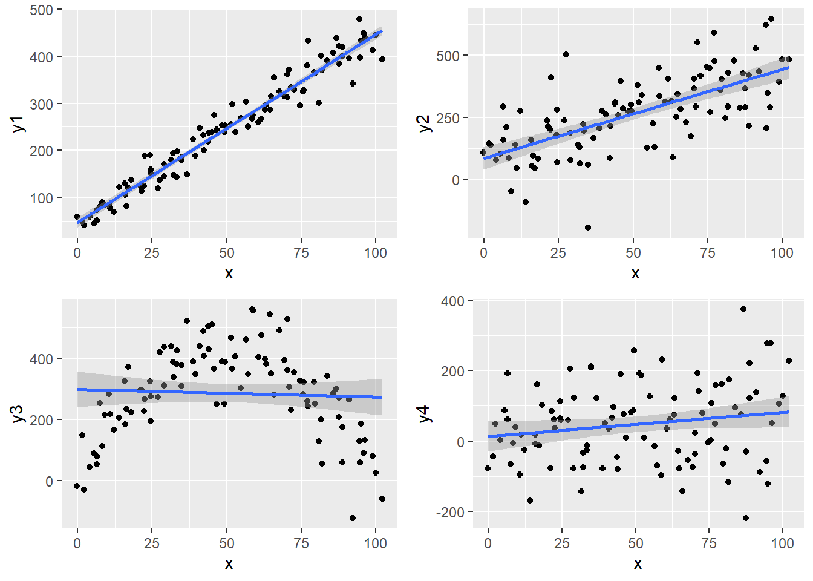
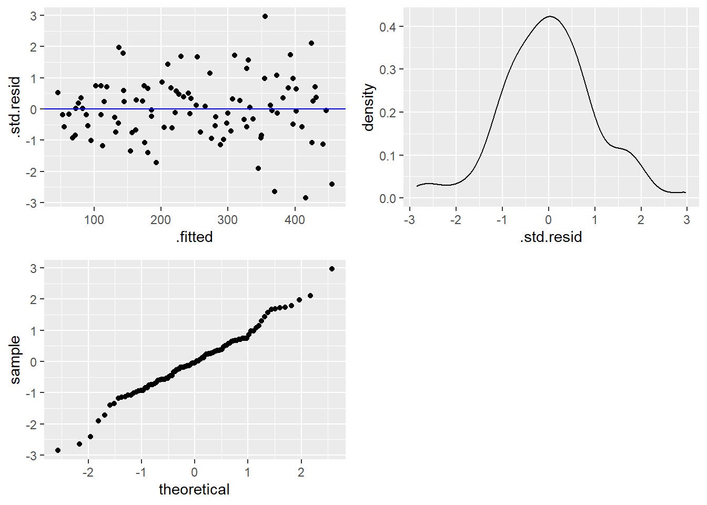
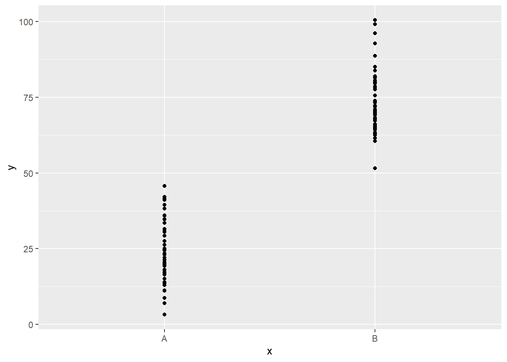
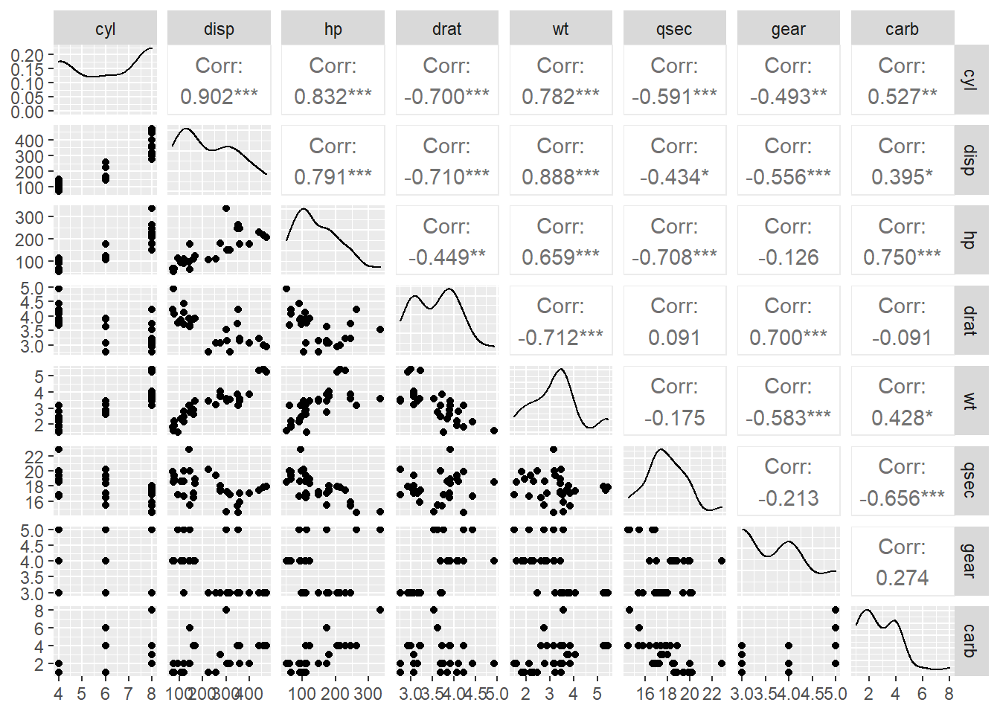
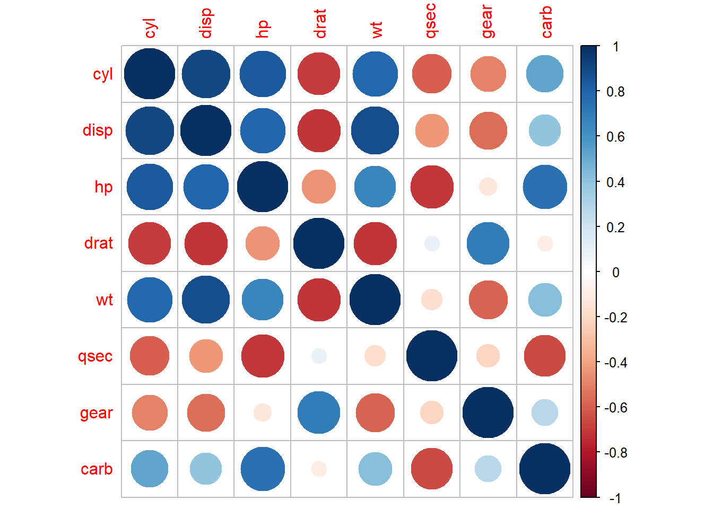

<!DOCTYPE html>
<html lang="" xml:lang="">
<head>

  <meta charset="utf-8" />
  <meta http-equiv="X-UA-Compatible" content="IE=edge" />
  <title>13 Selected Machine Learning Methods: Regression Analysis | Let’s program in R</title>
  <meta name="description" content="R Coursebook" />
  <meta name="generator" content="bookdown 0.29 and GitBook 2.6.7" />

  <meta property="og:title" content="13 Selected Machine Learning Methods: Regression Analysis | Let’s program in R" />
  <meta property="og:type" content="book" />
  
  <meta property="og:description" content="R Coursebook" />
  <meta name="github-repo" content="rstudio/bookdown-demo" />

  <meta name="twitter:card" content="summary" />
  <meta name="twitter:title" content="13 Selected Machine Learning Methods: Regression Analysis | Let’s program in R" />
  
  <meta name="twitter:description" content="R Coursebook" />
  

<meta name="author" content="Damir Pintar" />


<meta name="date" content="2023-01-16" />

  <meta name="viewport" content="width=device-width, initial-scale=1" />
  <meta name="apple-mobile-web-app-capable" content="yes" />
  <meta name="apple-mobile-web-app-status-bar-style" content="black" />
  
  
<link rel="prev" href="ggplot2.html"/>
<link rel="next" href="predictive_Modeling.html"/>
<script src="libs/jquery-3.6.0/jquery-3.6.0.min.js"></script>
<script src="https://cdn.jsdelivr.net/npm/fuse.js@6.4.6/dist/fuse.min.js"></script>
<link href="libs/gitbook-2.6.7/css/style.css" rel="stylesheet" />
<link href="libs/gitbook-2.6.7/css/plugin-table.css" rel="stylesheet" />
<link href="libs/gitbook-2.6.7/css/plugin-bookdown.css" rel="stylesheet" />
<link href="libs/gitbook-2.6.7/css/plugin-highlight.css" rel="stylesheet" />
<link href="libs/gitbook-2.6.7/css/plugin-search.css" rel="stylesheet" />
<link href="libs/gitbook-2.6.7/css/plugin-fontsettings.css" rel="stylesheet" />
<link href="libs/gitbook-2.6.7/css/plugin-clipboard.css" rel="stylesheet" />


<link href="libs/anchor-sections-1.1.0/anchor-sections.css" rel="stylesheet" />
<link href="libs/anchor-sections-1.1.0/anchor-sections-hash.css" rel="stylesheet" />
<script src="libs/anchor-sections-1.1.0/anchor-sections.js"></script>

<style type="text/css">
.showopt {
  background-color: #004c93;
  color: #FFFFFF; 
  width: 140px;
  height: 4	0px;
  text-align: center;
  vertical-align: middle !important;
  float: right;
  font-family: sans-serif;
  font-size:10 pt;
  border-radius: 8px;
}

.showopt:hover {
    background-color: #dfe4f2;
    color: #004c93;
}

pre.plot {
  background-color: white !important;
}
</style>

<script>
 $(document).ready(function() {

  $chunks = $('.fold');

  $chunks.each(function () {

    // add button to source code chunks
    if ( $(this).hasClass('s') ) {
      $('pre.r', this).prepend("<div class=\"showopt\">Show solution</div><br style=\"line-height:22px;\"/>");
      $('pre.r', this).children('code').attr('class', 'folded');
    }

    // add button to output chunks
    if ( $(this).hasClass('o') ) {
      $('pre:not(.r)', this).has('code').prepend("<div class=\"showopt\">Show results</div><br style=\"line-height:22px;\"/>");
      $('pre:not(.r)', this).children('code:not(r)').addClass('folded');

      // add button to plots
      $(this).find('img').wrap('<pre class=\"plot\"></pre>');
      $('pre.plot', this).prepend("<div class=\"showopt\">Show figure</div><br style=\"line-height:22px;\"/>");
      $('pre.plot', this).children('img').addClass('folded');

    }
  });

  // hide all chunks when document is loaded
  $('.folded').css('display', 'none')

  // function to toggle the visibility
  $('.showopt').click(function() {
    var label = $(this).html();
    if (label.indexOf("Show") >= 0) {
      $(this).html(label.replace("Show", "Hide"));
    } else {
      $(this).html(label.replace("Hide", "Show"));
    }
    $(this).siblings('code, img').slideToggle('fast', 'swing');
  });
});
</script>


<style type="text/css">
pre > code.sourceCode { white-space: pre; position: relative; }
pre > code.sourceCode > span { display: inline-block; line-height: 1.25; }
pre > code.sourceCode > span:empty { height: 1.2em; }
.sourceCode { overflow: visible; }
code.sourceCode > span { color: inherit; text-decoration: inherit; }
pre.sourceCode { margin: 0; }
@media screen {
div.sourceCode { overflow: auto; }
}
@media print {
pre > code.sourceCode { white-space: pre-wrap; }
pre > code.sourceCode > span { text-indent: -5em; padding-left: 5em; }
}
pre.numberSource code
  { counter-reset: source-line 0; }
pre.numberSource code > span
  { position: relative; left: -4em; counter-increment: source-line; }
pre.numberSource code > span > a:first-child::before
  { content: counter(source-line);
    position: relative; left: -1em; text-align: right; vertical-align: baseline;
    border: none; display: inline-block;
    -webkit-touch-callout: none; -webkit-user-select: none;
    -khtml-user-select: none; -moz-user-select: none;
    -ms-user-select: none; user-select: none;
    padding: 0 4px; width: 4em;
    color: #aaaaaa;
  }
pre.numberSource { margin-left: 3em; border-left: 1px solid #aaaaaa;  padding-left: 4px; }
div.sourceCode
  {   }
@media screen {
pre > code.sourceCode > span > a:first-child::before { text-decoration: underline; }
}
code span.al { color: #ff0000; font-weight: bold; } /* Alert */
code span.an { color: #60a0b0; font-weight: bold; font-style: italic; } /* Annotation */
code span.at { color: #7d9029; } /* Attribute */
code span.bn { color: #40a070; } /* BaseN */
code span.bu { color: #008000; } /* BuiltIn */
code span.cf { color: #007020; font-weight: bold; } /* ControlFlow */
code span.ch { color: #4070a0; } /* Char */
code span.cn { color: #880000; } /* Constant */
code span.co { color: #60a0b0; font-style: italic; } /* Comment */
code span.cv { color: #60a0b0; font-weight: bold; font-style: italic; } /* CommentVar */
code span.do { color: #ba2121; font-style: italic; } /* Documentation */
code span.dt { color: #902000; } /* DataType */
code span.dv { color: #40a070; } /* DecVal */
code span.er { color: #ff0000; font-weight: bold; } /* Error */
code span.ex { } /* Extension */
code span.fl { color: #40a070; } /* Float */
code span.fu { color: #06287e; } /* Function */
code span.im { color: #008000; font-weight: bold; } /* Import */
code span.in { color: #60a0b0; font-weight: bold; font-style: italic; } /* Information */
code span.kw { color: #007020; font-weight: bold; } /* Keyword */
code span.op { color: #666666; } /* Operator */
code span.ot { color: #007020; } /* Other */
code span.pp { color: #bc7a00; } /* Preprocessor */
code span.sc { color: #4070a0; } /* SpecialChar */
code span.ss { color: #bb6688; } /* SpecialString */
code span.st { color: #4070a0; } /* String */
code span.va { color: #19177c; } /* Variable */
code span.vs { color: #4070a0; } /* VerbatimString */
code span.wa { color: #60a0b0; font-weight: bold; font-style: italic; } /* Warning */
</style>

<style type="text/css">
/* Used with Pandoc 2.11+ new --citeproc when CSL is used */
div.csl-bib-body { }
div.csl-entry {
  clear: both;
}
.hanging div.csl-entry {
  margin-left:2em;
  text-indent:-2em;
}
div.csl-left-margin {
  min-width:2em;
  float:left;
}
div.csl-right-inline {
  margin-left:2em;
  padding-left:1em;
}
div.csl-indent {
  margin-left: 2em;
}
</style>

<link rel="stylesheet" href="style.css" type="text/css" />
</head>

<body>


  <div class="book without-animation with-summary font-size-2 font-family-1" data-basepath=".">

    <div class="book-summary">
      <nav role="navigation">

<ul class="summary">
<li class="chapter" data-level="" data-path="index.html"><a href="index.html"><i class="fa fa-check"></i>(“Statistical Programming Fundamentals” course book)</a>
<ul>
<li class="chapter" data-level="" data-path="index.html"><a href="index.html#foreword"><i class="fa fa-check"></i>Foreword</a></li>
</ul></li>
<li class="part"><span><b>I Basic elements of R</b></span></li>
<li class="chapter" data-level="1" data-path="introduction.html"><a href="introduction.html"><i class="fa fa-check"></i><b>1</b> Introduction</a>
<ul>
<li class="chapter" data-level="1.1" data-path="introduction.html"><a href="introduction.html#what-is-r"><i class="fa fa-check"></i><b>1.1</b> What is R?</a>
<ul>
<li class="chapter" data-level="1.1.1" data-path="introduction.html"><a href="introduction.html#general-facts-about-r"><i class="fa fa-check"></i><b>1.1.1</b> General facts about R</a></li>
<li class="chapter" data-level="1.1.2" data-path="introduction.html"><a href="introduction.html#r-alternatives"><i class="fa fa-check"></i><b>1.1.2</b> R alternatives</a></li>
</ul></li>
<li class="chapter" data-level="1.2" data-path="introduction.html"><a href="introduction.html#installing-software-support"><i class="fa fa-check"></i><b>1.2</b> Installing Software Support</a></li>
<li class="chapter" data-level="1.3" data-path="introduction.html"><a href="introduction.html#overview-of-the-development-interface-rstudio"><i class="fa fa-check"></i><b>1.3</b> Overview of the development interface <em>RStudio</em></a>
<ul>
<li class="chapter" data-level="1.3.1" data-path="introduction.html"><a href="introduction.html#interactive-console"><i class="fa fa-check"></i><b>1.3.1</b> Interactive console</a></li>
<li class="chapter" data-level="1.3.2" data-path="introduction.html"><a href="introduction.html#writing-r-scripts"><i class="fa fa-check"></i><b>1.3.2</b> Writing R scripts</a></li>
<li class="chapter" data-level="1.3.3" data-path="introduction.html"><a href="introduction.html#r-markdown"><i class="fa fa-check"></i><b>1.3.3</b> <em>R Markdown</em></a></li>
</ul></li>
<li class="chapter" data-level="1.4" data-path="introduction.html"><a href="introduction.html#how-to-use-this-coursebook"><i class="fa fa-check"></i><b>1.4</b> How to use this coursebook?</a></li>
</ul></li>
<li class="chapter" data-level="2" data-path="tipovi.html"><a href="tipovi.html"><i class="fa fa-check"></i><b>2</b> Basic data types and operators</a>
<ul>
<li class="chapter" data-level="2.1" data-path="tipovi.html"><a href="tipovi.html#basic-data-types"><i class="fa fa-check"></i><b>2.1</b> Basic data types</a></li>
<li class="chapter" data-level="2.2" data-path="tipovi.html"><a href="tipovi.html#operators"><i class="fa fa-check"></i><b>2.2</b> Operators</a></li>
<li class="chapter" data-level="2.3" data-path="tipovi.html"><a href="tipovi.html#missing-unknown-and-non-existent-values"><i class="fa fa-check"></i><b>2.3</b> Missing, unknown, and non-existent values</a></li>
<li class="chapter" data-level="" data-path="tipovi.html"><a href="tipovi.html#homework-exercises"><i class="fa fa-check"></i>Homework exercises</a></li>
</ul></li>
<li class="chapter" data-level="3" data-path="vektori.html"><a href="vektori.html"><i class="fa fa-check"></i><b>3</b> Vectors, matrices and lists</a>
<ul>
<li class="chapter" data-level="3.1" data-path="vektori.html"><a href="vektori.html#vector"><i class="fa fa-check"></i><b>3.1</b> Vector</a>
<ul>
<li class="chapter" data-level="3.1.1" data-path="vektori.html"><a href="vektori.html#creating-a-vector"><i class="fa fa-check"></i><b>3.1.1</b> Creating a vector</a></li>
<li class="chapter" data-level="3.1.2" data-path="vektori.html"><a href="vektori.html#vector-concatenation"><i class="fa fa-check"></i><b>3.1.2</b> Vector concatenation</a></li>
<li class="chapter" data-level="3.1.3" data-path="vektori.html"><a href="vektori.html#operator"><i class="fa fa-check"></i><b>3.1.3</b> Operator <code>[</code></a></li>
<li class="chapter" data-level="3.1.4" data-path="vektori.html"><a href="vektori.html#principles-of-vectorization-and-recycling"><i class="fa fa-check"></i><b>3.1.4</b> Principles of vectorization and recycling</a></li>
</ul></li>
<li class="chapter" data-level="3.2" data-path="vektori.html"><a href="vektori.html#index-vectors"><i class="fa fa-check"></i><b>3.2</b> Index vectors</a>
<ul>
<li class="chapter" data-level="3.2.1" data-path="vektori.html"><a href="vektori.html#positional-indexing"><i class="fa fa-check"></i><b>3.2.1</b> Positional Indexing</a></li>
<li class="chapter" data-level="3.2.2" data-path="vektori.html"><a href="vektori.html#conditional-indexing"><i class="fa fa-check"></i><b>3.2.2</b> Conditional indexing</a></li>
<li class="chapter" data-level="3.2.3" data-path="vektori.html"><a href="vektori.html#label-based-indexing"><i class="fa fa-check"></i><b>3.2.3</b> Label-based indexing</a></li>
</ul></li>
<li class="chapter" data-level="3.3" data-path="vektori.html"><a href="vektori.html#matrices-and-arrays"><i class="fa fa-check"></i><b>3.3</b> Matrices and arrays</a></li>
<li class="chapter" data-level="3.4" data-path="vektori.html"><a href="vektori.html#matrix-slicing"><i class="fa fa-check"></i><b>3.4</b> Matrix slicing</a></li>
<li class="chapter" data-level="3.5" data-path="vektori.html"><a href="vektori.html#example-3.2---matrix-slicing"><i class="fa fa-check"></i><b>3.5</b> Example 3.2 - matrix slicing</a></li>
<li class="chapter" data-level="3.6" data-path="vektori.html"><a href="vektori.html#lists"><i class="fa fa-check"></i><b>3.6</b> Lists</a></li>
<li class="chapter" data-level="" data-path="vektori.html"><a href="vektori.html#homework-exercises-1"><i class="fa fa-check"></i>Homework exercises</a></li>
</ul></li>
<li class="chapter" data-level="4" data-path="okviri.html"><a href="okviri.html"><i class="fa fa-check"></i><b>4</b> Data frames and factors</a>
<ul>
<li class="chapter" data-level="4.1" data-path="okviri.html"><a href="okviri.html#data-frames"><i class="fa fa-check"></i><b>4.1</b> Data frames</a></li>
<li class="chapter" data-level="4.2" data-path="okviri.html"><a href="okviri.html#selecting-rows-and-columns"><i class="fa fa-check"></i><b>4.2</b> Selecting rows and columns</a></li>
<li class="chapter" data-level="4.3" data-path="okviri.html"><a href="okviri.html#adding-and-deleting-rows-and-columns"><i class="fa fa-check"></i><b>4.3</b> Adding and deleting rows and columns</a></li>
<li class="chapter" data-level="4.4" data-path="okviri.html"><a href="okviri.html#factors"><i class="fa fa-check"></i><b>4.4</b> Factors</a>
<ul>
<li class="chapter" data-level="4.4.1" data-path="okviri.html"><a href="okviri.html#example-4.1---mishandling-factorization"><i class="fa fa-check"></i><b>4.4.1</b> Example 4.1 - mishandling factorization</a></li>
</ul></li>
<li class="chapter" data-level="" data-path="okviri.html"><a href="okviri.html#homework-exercises-2"><i class="fa fa-check"></i>Homework exercises</a></li>
</ul></li>
<li class="chapter" data-level="5" data-path="control.html"><a href="control.html"><i class="fa fa-check"></i><b>5</b> Conditional statements and programming loops</a>
<ul>
<li class="chapter" data-level="5.1" data-path="control.html"><a href="control.html#flow-control-commands"><i class="fa fa-check"></i><b>5.1</b> Flow control commands</a>
<ul>
<li class="chapter" data-level="5.1.1" data-path="control.html"><a href="control.html#conditional-execution"><i class="fa fa-check"></i><b>5.1.1</b> Conditional execution</a></li>
</ul></li>
<li class="chapter" data-level="5.2" data-path="control.html"><a href="control.html#loops"><i class="fa fa-check"></i><b>5.2</b> Loops</a>
<ul>
<li class="chapter" data-level="5.2.1" data-path="control.html"><a href="control.html#therepeat-loop"><i class="fa fa-check"></i><b>5.2.1</b> The<code>repeat</code> loop</a></li>
</ul></li>
<li class="chapter" data-level="5.3" data-path="control.html"><a href="control.html#example-5.1---the-repeat-loop"><i class="fa fa-check"></i><b>5.3</b> Example 5.1 - the <code>repeat</code> loop</a>
<ul>
<li class="chapter" data-level="5.3.1" data-path="control.html"><a href="control.html#the-while-loop"><i class="fa fa-check"></i><b>5.3.1</b> The <code>while</code> loop</a></li>
<li class="chapter" data-level="5.3.2" data-path="control.html"><a href="control.html#the-for-loop"><i class="fa fa-check"></i><b>5.3.2</b> The <code>for</code> loop</a></li>
</ul></li>
<li class="chapter" data-level="" data-path="control.html"><a href="control.html#homework-exercises-3"><i class="fa fa-check"></i>Homework exercises</a></li>
</ul></li>
<li class="chapter" data-level="6" data-path="packages.html"><a href="packages.html"><i class="fa fa-check"></i><b>6</b> Packages, built-in functions and environments</a>
<ul>
<li class="chapter" data-level="6.1" data-path="packages.html"><a href="packages.html#working-with-packages"><i class="fa fa-check"></i><b>6.1</b> Working with packages</a></li>
<li class="chapter" data-level="6.2" data-path="packages.html"><a href="packages.html#built-in-functions"><i class="fa fa-check"></i><b>6.2</b> Built-in functions</a></li>
<li class="chapter" data-level="6.3" data-path="packages.html"><a href="packages.html#environments"><i class="fa fa-check"></i><b>6.3</b> Environments</a></li>
<li class="chapter" data-level="" data-path="packages.html"><a href="packages.html#homework-exercises-4"><i class="fa fa-check"></i>Homework exercises</a></li>
</ul></li>
<li class="chapter" data-level="7" data-path="user.html"><a href="user.html"><i class="fa fa-check"></i><b>7</b> User Defined Functions</a>
<ul>
<li class="chapter" data-level="7.1" data-path="user.html"><a href="user.html#user-defined-functions"><i class="fa fa-check"></i><b>7.1</b> User defined functions</a>
<ul>
<li class="chapter" data-level="7.1.1" data-path="user.html"><a href="user.html#defining-a-new-function"><i class="fa fa-check"></i><b>7.1.1</b> Defining a new function</a></li>
<li class="chapter" data-level="7.1.2" data-path="user.html"><a href="user.html#the-copy-on-modify-principle"><i class="fa fa-check"></i><b>7.1.2</b> The “copy-on-modify” principle</a></li>
<li class="chapter" data-level="7.1.3" data-path="user.html"><a href="user.html#example-7.1---copy-on-modify"><i class="fa fa-check"></i><b>7.1.3</b> Example 7.1 - “copy-on-modify”</a></li>
<li class="chapter" data-level="7.1.4" data-path="user.html"><a href="user.html#example-7.2---copy-on-modify-2"><i class="fa fa-check"></i><b>7.1.4</b> Example 7.2 - “copy-on-modify (2)”</a></li>
<li class="chapter" data-level="7.1.5" data-path="user.html"><a href="user.html#example-7.3---copy-on-modify-and-environments"><i class="fa fa-check"></i><b>7.1.5</b> Example 7.3 - “copy-on-modify” and environments</a></li>
<li class="chapter" data-level="7.1.6" data-path="user.html"><a href="user.html#example-7.4---the---operator"><i class="fa fa-check"></i><b>7.1.6</b> Example 7.4 - the <code>&lt;&lt;-</code> operator</a></li>
<li class="chapter" data-level="7.1.7" data-path="user.html"><a href="user.html#example-7.5---changing-a-data-frame-column-with-the---operator"><i class="fa fa-check"></i><b>7.1.7</b> Example 7.5 - changing a data frame column with the <code>&lt;&lt;-</code> operator</a></li>
<li class="chapter" data-level="7.1.8" data-path="user.html"><a href="user.html#function-as-an-object"><i class="fa fa-check"></i><b>7.1.8</b> Function as an object</a></li>
</ul></li>
<li class="chapter" data-level="7.2" data-path="user.html"><a href="user.html#the-apply-family"><i class="fa fa-check"></i><b>7.2</b> The <code>apply</code> family</a>
<ul>
<li class="chapter" data-level="7.2.1" data-path="user.html"><a href="user.html#the-apply-function"><i class="fa fa-check"></i><b>7.2.1</b> The <code>apply</code> function</a></li>
<li class="chapter" data-level="7.2.2" data-path="user.html"><a href="user.html#the-lapply-sapply-and-vapply-functions"><i class="fa fa-check"></i><b>7.2.2</b> The <code>lapply</code>, <code>sapply</code> and <code>vapply</code> functions</a></li>
<li class="chapter" data-level="7.2.3" data-path="user.html"><a href="user.html#other-functions-from-the-apply-family-and-the-available-alternatives"><i class="fa fa-check"></i><b>7.2.3</b> Other functions from the <code>apply</code> family and the available alternatives</a></li>
</ul></li>
<li class="chapter" data-level="" data-path="user.html"><a href="user.html#homework-exercises-5"><i class="fa fa-check"></i>Homework exercises</a></li>
</ul></li>
<li class="chapter" data-level="8" data-path="objects.html"><a href="objects.html"><i class="fa fa-check"></i><b>8</b> Object oriented systems in R</a>
<ul>
<li class="chapter" data-level="8.1" data-path="objects.html"><a href="objects.html#object-oriented-systems-in-r"><i class="fa fa-check"></i><b>8.1</b> Object-oriented systems in R</a></li>
<li class="chapter" data-level="8.2" data-path="objects.html"><a href="objects.html#overview-of-the-s3-object-model"><i class="fa fa-check"></i><b>8.2</b> Overview of the S3 object model</a></li>
<li class="chapter" data-level="8.3" data-path="objects.html"><a href="objects.html#generic-functions"><i class="fa fa-check"></i><b>8.3</b> Generic functions</a></li>
<li class="chapter" data-level="8.4" data-path="objects.html"><a href="objects.html#adding-generic-functions-to-an-object"><i class="fa fa-check"></i><b>8.4</b> Adding generic functions to an object</a>
<ul>
<li class="chapter" data-level="8.4.1" data-path="objects.html"><a href="objects.html#conclusion-on-s3-objects"><i class="fa fa-check"></i><b>8.4.1</b> Conclusion on S3 objects</a></li>
</ul></li>
<li class="chapter" data-level="8.5" data-path="objects.html"><a href="objects.html#short-overview-of-s4-objects"><i class="fa fa-check"></i><b>8.5</b> Short overview of S4 objects</a></li>
<li class="chapter" data-level="" data-path="objects.html"><a href="objects.html#homework-exercises-6"><i class="fa fa-check"></i>Homework exercises</a></li>
</ul></li>
<li class="part"><span><b>II Data management and visualizations</b></span></li>
<li class="chapter" data-level="9" data-path="pipe.html"><a href="pipe.html"><i class="fa fa-check"></i><b>9</b> Pipeline operator and tidy data</a>
<ul>
<li class="chapter" data-level="9.1" data-path="pipe.html"><a href="pipe.html#pipeline-operator"><i class="fa fa-check"></i><b>9.1</b> Pipeline operator</a></li>
<li class="chapter" data-level="9.2" data-path="pipe.html"><a href="pipe.html#tidy-data"><i class="fa fa-check"></i><b>9.2</b> Tidy data</a>
<ul>
<li class="chapter" data-level="9.2.1" data-path="pipe.html"><a href="pipe.html#the-pivot_longer-andpivot_wider-functions"><i class="fa fa-check"></i><b>9.2.1</b> The <code>pivot_longer</code> and<code>pivot_wider</code> functions</a></li>
<li class="chapter" data-level="9.2.2" data-path="pipe.html"><a href="pipe.html#the-separate-and-unite-functions"><i class="fa fa-check"></i><b>9.2.2</b> The <code>separate</code> and <code>unite</code> functions</a></li>
</ul></li>
<li class="chapter" data-level="" data-path="pipe.html"><a href="pipe.html#homework-exercises-7"><i class="fa fa-check"></i>Homework exercises</a></li>
</ul></li>
<li class="chapter" data-level="10" data-path="dates.html"><a href="dates.html"><i class="fa fa-check"></i><b>10</b> Working with dates and character strings</a>
<ul>
<li class="chapter" data-level="10.1" data-path="dates.html"><a href="dates.html#working-with-dates"><i class="fa fa-check"></i><b>10.1</b> Working with dates</a>
<ul>
<li class="chapter" data-level="10.1.1" data-path="dates.html"><a href="dates.html#the-date-class"><i class="fa fa-check"></i><b>10.1.1</b> The <code>Date</code> class</a></li>
<li class="chapter" data-level="10.1.2" data-path="dates.html"><a href="dates.html#theposixct-andposixlt-classes"><i class="fa fa-check"></i><b>10.1.2</b> The<code>POSIXct</code> and<code>POSIXlt</code> classes</a></li>
</ul></li>
<li class="chapter" data-level="10.2" data-path="dates.html"><a href="dates.html#the-lubridate-package"><i class="fa fa-check"></i><b>10.2</b> The <code>lubridate</code> package</a></li>
<li class="chapter" data-level="10.3" data-path="dates.html"><a href="dates.html#working-with-character-strings"><i class="fa fa-check"></i><b>10.3</b> Working with character strings</a>
<ul>
<li class="chapter" data-level="10.3.1" data-path="dates.html"><a href="dates.html#text-analysis-and-regular-expressions"><i class="fa fa-check"></i><b>10.3.1</b> Text analysis and regular expressions</a></li>
<li class="chapter" data-level="10.3.2" data-path="dates.html"><a href="dates.html#the-stringr-package"><i class="fa fa-check"></i><b>10.3.2</b> The <code>stringr</code> package</a></li>
</ul></li>
<li class="chapter" data-level="" data-path="dates.html"><a href="dates.html#homework-exercises-8"><i class="fa fa-check"></i>Homework exercises</a></li>
</ul></li>
<li class="chapter" data-level="11" data-path="dplyr.html"><a href="dplyr.html"><i class="fa fa-check"></i><b>11</b> Data wrangling</a>
<ul>
<li class="chapter" data-level="11.1" data-path="dplyr.html"><a href="dplyr.html#data-wrangling-with-package-dplyr"><i class="fa fa-check"></i><b>11.1</b> Data wrangling with package <code>dplyr</code></a></li>
<li class="chapter" data-level="11.2" data-path="dplyr.html"><a href="dplyr.html#dataset-titanic"><i class="fa fa-check"></i><b>11.2</b> Dataset: <em>Titanic</em></a></li>
<li class="chapter" data-level="11.3" data-path="dplyr.html"><a href="dplyr.html#creating-a-subset-of-observations-with-filter-andslice"><i class="fa fa-check"></i><b>11.3</b> Creating a subset of observations with <code>filter</code> and<code>slice</code></a></li>
<li class="chapter" data-level="11.4" data-path="dplyr.html"><a href="dplyr.html#creating-a-subset-of-columns-with-select"><i class="fa fa-check"></i><b>11.4</b> Creating a subset of columns with <code>select</code></a></li>
<li class="chapter" data-level="11.5" data-path="dplyr.html"><a href="dplyr.html#creating-new-columns-with-mutate"><i class="fa fa-check"></i><b>11.5</b> Creating new columns with <code>mutate</code></a></li>
<li class="chapter" data-level="11.6" data-path="dplyr.html"><a href="dplyr.html#sample-dataset-houston-flights"><i class="fa fa-check"></i><b>11.6</b> Sample Dataset: <em>Houston flights</em></a></li>
<li class="chapter" data-level="11.7" data-path="dplyr.html"><a href="dplyr.html#grouping-and-aggregation-with-group_by-andsummarise"><i class="fa fa-check"></i><b>11.7</b> Grouping and aggregation with <code>group_by</code> and<code>summarise</code></a></li>
<li class="chapter" data-level="11.8" data-path="dplyr.html"><a href="dplyr.html#merging-data-frames-with-join-functions"><i class="fa fa-check"></i><b>11.8</b> Merging data frames with join functions</a></li>
<li class="chapter" data-level="11.9" data-path="dplyr.html"><a href="dplyr.html#integrating-dplyr-with-relational-databases"><i class="fa fa-check"></i><b>11.9</b> Integrating <code>dplyr</code> with relational databases</a></li>
<li class="chapter" data-level="" data-path="dplyr.html"><a href="dplyr.html#homework-exercises-9"><i class="fa fa-check"></i>Homework exercises</a></li>
</ul></li>
<li class="chapter" data-level="12" data-path="ggplot2.html"><a href="ggplot2.html"><i class="fa fa-check"></i><b>12</b> Visualising data with <code>ggplot2</code> package</a>
<ul>
<li class="chapter" data-level="12.1" data-path="ggplot2.html"><a href="ggplot2.html#exploratory-data-analysis"><i class="fa fa-check"></i><b>12.1</b> Exploratory data analysis</a></li>
<li class="chapter" data-level="12.2" data-path="ggplot2.html"><a href="ggplot2.html#data-visualization-using-the-r-language"><i class="fa fa-check"></i><b>12.2</b> Data visualization using the R language</a></li>
<li class="chapter" data-level="12.3" data-path="ggplot2.html"><a href="ggplot2.html#grammar-of-graphics-and-the-ggplot2-package"><i class="fa fa-check"></i><b>12.3</b> Grammar of graphics and the <code>ggplot2</code> package</a>
<ul>
<li class="chapter" data-level="12.3.1" data-path="ggplot2.html"><a href="ggplot2.html#aspects-of-data-aesthetics-and-geometries"><i class="fa fa-check"></i><b>12.3.1</b> Aspects of data, aesthetics and geometries</a></li>
<li class="chapter" data-level="12.3.2" data-path="ggplot2.html"><a href="ggplot2.html#fixed-geometry-parameters"><i class="fa fa-check"></i><b>12.3.2</b> Fixed geometry parameters</a></li>
<li class="chapter" data-level="12.3.3" data-path="ggplot2.html"><a href="ggplot2.html#the-aspects-of-statistics-and-position"><i class="fa fa-check"></i><b>12.3.3</b> The aspects of statistics and position</a></li>
<li class="chapter" data-level="12.3.4" data-path="ggplot2.html"><a href="ggplot2.html#the-relationship-between-geometry-and-statistics"><i class="fa fa-check"></i><b>12.3.4</b> The relationship between geometry and statistics</a></li>
<li class="chapter" data-level="12.3.5" data-path="ggplot2.html"><a href="ggplot2.html#storing-a-graph-to-a-file"><i class="fa fa-check"></i><b>12.3.5</b> Storing a graph to a file</a></li>
<li class="chapter" data-level="12.3.6" data-path="ggplot2.html"><a href="ggplot2.html#aspects-of-scale-coordinate-system-and-theme"><i class="fa fa-check"></i><b>12.3.6</b> Aspects of scale, coordinate system and theme</a></li>
</ul></li>
<li class="chapter" data-level="12.4" data-path="ggplot2.html"><a href="ggplot2.html#tu"><i class="fa fa-check"></i><b>12.4</b> TU</a>
<ul>
<li class="chapter" data-level="12.4.1" data-path="ggplot2.html"><a href="ggplot2.html#conditional-faceted-graphs"><i class="fa fa-check"></i><b>12.4.1</b> Conditional (faceted) graphs</a></li>
</ul></li>
<li class="chapter" data-level="12.5" data-path="ggplot2.html"><a href="ggplot2.html#graphs-in-exploratory-analysis-and-reporting"><i class="fa fa-check"></i><b>12.5</b> Graphs in Exploratory Analysis and Reporting</a></li>
<li class="chapter" data-level="" data-path="ggplot2.html"><a href="ggplot2.html#exercises"><i class="fa fa-check"></i>Exercises</a></li>
</ul></li>
<li class="chapter" data-level="13" data-path="regression.html"><a href="regression.html"><i class="fa fa-check"></i><b>13</b> Selected Machine Learning Methods: Regression Analysis</a>
<ul>
<li class="chapter" data-level="13.1" data-path="regression.html"><a href="regression.html#machine-learning---a-short-introduction"><i class="fa fa-check"></i><b>13.1</b> Machine learning - a short introduction</a></li>
<li class="chapter" data-level="13.2" data-path="regression.html"><a href="regression.html#simple-linear-regression"><i class="fa fa-check"></i><b>13.2</b> Simple linear regression</a>
<ul>
<li class="chapter" data-level="13.2.1" data-path="regression.html"><a href="regression.html#the-lm-function"><i class="fa fa-check"></i><b>13.2.1</b> The <code>lm</code> function</a></li>
<li class="chapter" data-level="13.2.2" data-path="regression.html"><a href="regression.html#linear-regression-and-categorical-variables"><i class="fa fa-check"></i><b>13.2.2</b> Linear regression and categorical variables</a></li>
</ul></li>
<li class="chapter" data-level="13.3" data-path="regression.html"><a href="regression.html#multiple-linear-regression"><i class="fa fa-check"></i><b>13.3</b> Multiple linear regression</a></li>
<li class="chapter" data-level="" data-path="regression.html"><a href="regression.html#homework-exercises-10"><i class="fa fa-check"></i>Homework exercises</a></li>
</ul></li>
<li class="chapter" data-level="14" data-path="predictive_Modeling.html"><a href="predictive_Modeling.html"><i class="fa fa-check"></i><b>14</b> Introduction to Predictive Modeling</a>
<ul>
<li class="chapter" data-level="14.1" data-path="predictive_Modeling.html"><a href="predictive_Modeling.html#what-is-predictive-modeling"><i class="fa fa-check"></i><b>14.1</b> What is predictive modeling?</a></li>
<li class="chapter" data-level="14.2" data-path="predictive_Modeling.html"><a href="predictive_Modeling.html#creating-training-and-test-datasets"><i class="fa fa-check"></i><b>14.2</b> Creating training and test datasets</a></li>
<li class="chapter" data-level="14.3" data-path="predictive_Modeling.html"><a href="predictive_Modeling.html#classification-predictive-models---knn-classification"><i class="fa fa-check"></i><b>14.3</b> Classification Predictive Models - kNN Classification</a></li>
<li class="chapter" data-level="14.4" data-path="predictive_Modeling.html"><a href="predictive_Modeling.html#package-caret-and-predictive-modeling"><i class="fa fa-check"></i><b>14.4</b> Package <code>caret</code> and predictive modeling</a></li>
</ul></li>
</ul>

      </nav>
    </div>

    <div class="book-body">
      <div class="body-inner">
        <div class="book-header" role="navigation">
          <h1>
            <i class="fa fa-circle-o-notch fa-spin"></i><a href="./">Let’s program in R</a>
          </h1>
        </div>

        <div class="page-wrapper" tabindex="-1" role="main">
          <div class="page-inner">

            <section class="normal" id="section-">
<div id="regression" class="section level1 hasAnchor" number="13">
<h1><span class="header-section-number">13</span> Selected Machine Learning Methods: Regression Analysis<a href="regression.html#regression" class="anchor-section" aria-label="Anchor link to header"></a></h1>
<hr />
<div id="machine-learning---a-short-introduction" class="section level2 hasAnchor" number="13.1">
<h2><span class="header-section-number">13.1</span> Machine learning - a short introduction<a href="regression.html#machine-learning---a-short-introduction" class="anchor-section" aria-label="Anchor link to header"></a></h2>
<p><em>Machine learning</em> is a field of computer science that deals with a specific type of programming in which we do not give explicit instructions to the computer, but rather expect the computer to come to certain insights on its own based on selected datasets and a particular “learning” method. Machine learning is often broadly divided into so-called <em>supervised learning</em>, where we have clearly defined inputs and outputs(goals), and <em>unsupervised learning</em>, where we do not have predefined outputs, but expect the computer to analyze only they enter to come up with some useful insights into the data itself. There are additional machine learning disciplines such as <em>reinforced learning</em>, <em>anomaly detection</em>, etc. which we will not further explain as they fall outside the scope of this textbook.</p>
<p>The term machine learning is often associated with the term “data mining” and “knowledge discovery from datasets”(<em>KDD - knowledge discovery from data</em>). It is difficult to determine the extent to which these terms overlap and what their exact definitions are, since various conventions that are not mutually consistent are often encountered in the literature. For the purposes of this tutorial, machine learning can be considered as a kind of “toolset” that we can use to discover(mine) useful information from datasets. The result of this process gives us some knowledge of the domain we can use to make certain decisions.</p>
<p>In this lesson, we will focus on one very commonly used machine learning method - <strong>linear regression</strong> - with emphasis on its use in the programming language R.</p>
<p>Linear regression is an extremely popular method of machine learning that, with the help of mathematical and statistical foundations, describes the potential linear relationship of dataset variables. If sufficient evidence is found that a linear relationship exists, then we have a potentially useful insight into the actual relationship of the two(or more) variables. Likewise, the resulting “formula” can be used to estimate the value of another(target) variable based on the known value of one variable(predictor).</p>
<p>Although more advanced predictive methods exist today, linear regression is still often used both for its simplicity and for its fact, understanding linear regression lays a solid foundation for learning and understanding more advanced machine learning methods. Because of this, linear regression is a logical and very important first step when entering the field of predictive analysis.</p>
<hr />
</div>
<div id="simple-linear-regression" class="section level2 hasAnchor" number="13.2">
<h2><span class="header-section-number">13.2</span> Simple linear regression<a href="regression.html#simple-linear-regression" class="anchor-section" aria-label="Anchor link to header"></a></h2>
<p>Simple linear regression is a method of supervised machine learning for predicting a target numeric variable using a linear function of the input variable. In this way, the creation of a predictive model is reduced to the process of determining the direction coefficient of direction and intercept value, which will form a simple formula for calculating the target variable using the input parameter. Since this method boils down to estimating the above parameters, the linear regression method belongs to so-called “parametric methods” of machine learning, i.e. predictive analysis.</p>
<p>Parameters of simple linear regression can often be determined mathematically. The most commonly used method of determining the direction and section coefficient is the <strong>least squares method</strong>, which draws a line between the points of the graph so that the sum of squares of the distance between estimations and real values is minimal (these distances are called “residuals”). Using a mathematical procedure, we can derive a formula that will calculate these parameters exactly, provided we have sufficient number of observations.</p>
<p>The motivation to perform simple linear regression is often found during the process of exploratory data analysis, especially during the visualization of two numerical variables by using scatterplots. If one of these variables is of interest to us as the target variable of the predictive model, and putting another variable on scatterplot results in a shape resembling a line, then this other variable is an obvious candidate for the simple linear regression method.</p>
<hr />
<p>In the following exercise, we will use an “artificial” data frame in which we have an input variable <code>x</code> and four possible target variables <code>y1</code>, <code>y2</code>, <code>y3</code> and <code>y4</code>. Each of these variables is created by a specific input transformation with the addition of a certain amount of noise. The idea of the assignment is to study the relationship between input and possible output variables and to identify which of these relationships is a good candidate for simple linear regression.</p>
<hr />
<p><strong>Exercise 13.1 - suspecting potential linear relationships</strong></p>
<div class="sourceCode" id="cb639"><pre class="sourceCode r"><code class="sourceCode r"><span id="cb639-1"><a href="regression.html#cb639-1" aria-hidden="true" tabindex="-1"></a><span class="co"># load data from the `data1.csv` file</span></span>
<span id="cb639-2"><a href="regression.html#cb639-2" aria-hidden="true" tabindex="-1"></a><span class="co"># in a variable called `df`</span></span>
<span id="cb639-3"><a href="regression.html#cb639-3" aria-hidden="true" tabindex="-1"></a></span>
<span id="cb639-4"><a href="regression.html#cb639-4" aria-hidden="true" tabindex="-1"></a></span>
<span id="cb639-5"><a href="regression.html#cb639-5" aria-hidden="true" tabindex="-1"></a><span class="co"># draw four scatterplots of relationships</span></span>
<span id="cb639-6"><a href="regression.html#cb639-6" aria-hidden="true" tabindex="-1"></a><span class="co"># between variable `x` and every variable `y` in the data box above</span></span>
<span id="cb639-7"><a href="regression.html#cb639-7" aria-hidden="true" tabindex="-1"></a><span class="co"># add a smoothing line to each graph using the `lm` method</span></span>
<span id="cb639-8"><a href="regression.html#cb639-8" aria-hidden="true" tabindex="-1"></a></span>
<span id="cb639-9"><a href="regression.html#cb639-9" aria-hidden="true" tabindex="-1"></a><span class="co"># answer the following questions:</span></span>
<span id="cb639-10"><a href="regression.html#cb639-10" aria-hidden="true" tabindex="-1"></a><span class="co"># in which graphs do you see a possible linear relationship between the variables?</span></span>
<span id="cb639-11"><a href="regression.html#cb639-11" aria-hidden="true" tabindex="-1"></a><span class="co"># which graphs show a nonlinear relationship?</span></span>
<span id="cb639-12"><a href="regression.html#cb639-12" aria-hidden="true" tabindex="-1"></a><span class="co"># for which graph would you say the variables are independent?</span></span></code></pre></div>
<div class="fold s o">
<div class="sourceCode" id="cb640"><pre class="sourceCode r"><code class="sourceCode r"><span id="cb640-1"><a href="regression.html#cb640-1" aria-hidden="true" tabindex="-1"></a>df <span class="ot">&lt;-</span> <span class="fu">read.csv</span>(<span class="st">&quot;data1.csv&quot;</span>, <span class="at">stringsAsFactors =</span> F, <span class="at">encoding =</span> <span class="st">&quot;UTF-8&quot;</span>)</span>
<span id="cb640-2"><a href="regression.html#cb640-2" aria-hidden="true" tabindex="-1"></a>g1 <span class="ot">&lt;-</span> <span class="fu">ggplot</span>(df, <span class="fu">aes</span>(x, y1)) <span class="sc">+</span> <span class="fu">geom_point</span>() <span class="sc">+</span> <span class="fu">geom_smooth</span>(<span class="at">method =</span> <span class="st">&#39;lm&#39;</span>)</span>
<span id="cb640-3"><a href="regression.html#cb640-3" aria-hidden="true" tabindex="-1"></a>g2 <span class="ot">&lt;-</span> <span class="fu">ggplot</span>(df, <span class="fu">aes</span>(x, y2)) <span class="sc">+</span> <span class="fu">geom_point</span>() <span class="sc">+</span> <span class="fu">geom_smooth</span>(<span class="at">method =</span> <span class="st">&#39;lm&#39;</span>)</span>
<span id="cb640-4"><a href="regression.html#cb640-4" aria-hidden="true" tabindex="-1"></a>g3 <span class="ot">&lt;-</span> <span class="fu">ggplot</span>(df, <span class="fu">aes</span>(x, y3)) <span class="sc">+</span> <span class="fu">geom_point</span>() <span class="sc">+</span> <span class="fu">geom_smooth</span>(<span class="at">method =</span> <span class="st">&#39;lm&#39;</span>)</span>
<span id="cb640-5"><a href="regression.html#cb640-5" aria-hidden="true" tabindex="-1"></a>g4 <span class="ot">&lt;-</span> <span class="fu">ggplot</span>(df, <span class="fu">aes</span>(x, y4)) <span class="sc">+</span> <span class="fu">geom_point</span>() <span class="sc">+</span> <span class="fu">geom_smooth</span>(<span class="at">method =</span> <span class="st">&#39;lm&#39;</span>)</span>
<span id="cb640-6"><a href="regression.html#cb640-6" aria-hidden="true" tabindex="-1"></a></span>
<span id="cb640-7"><a href="regression.html#cb640-7" aria-hidden="true" tabindex="-1"></a></span>
<span id="cb640-8"><a href="regression.html#cb640-8" aria-hidden="true" tabindex="-1"></a><span class="fu">grid.arrange</span>(g1, g2, g3, g4)</span></code></pre></div>
<pre><code>## `geom_smooth()` using formula &#39;y ~ x&#39;
## `geom_smooth()` using formula &#39;y ~ x&#39;
## `geom_smooth()` using formula &#39;y ~ x&#39;
## `geom_smooth()` using formula &#39;y ~ x&#39;</code></pre>
<p></p>
</div>
<hr />
<p>Visualizing the relationship between two variables can usually provide us with relatively good intuition when we can expect a linear model to work relatively well. If we want to numerically describe the power of the linear relationship of two variables, we can use a so-called “Pearson correlation coefficient” which will always the value from the interval [-1,1], where -1 means complete “negative” correlation, 1 complete positive, and 0 that there is no correlation. In R, we can get this coefficient easily with the help of the <code>cor</code> function.</p>
<p>Let’s calculate the correlation coefficient for all the pairs of input and output variables shown in the graphs from the previous exercise.</p>
<hr />
<p><strong>Exercise 13.2 - calculating the correlation coefficient </strong></p>
<div class="sourceCode" id="cb642"><pre class="sourceCode r"><code class="sourceCode r"><span id="cb642-1"><a href="regression.html#cb642-1" aria-hidden="true" tabindex="-1"></a><span class="co"># calculate and print the Pearson&#39;s correlation coefficient</span></span>
<span id="cb642-2"><a href="regression.html#cb642-2" aria-hidden="true" tabindex="-1"></a><span class="co"># between all pairs visualized in the previous exercise</span></span></code></pre></div>
<div class="fold s o">
<div class="sourceCode" id="cb643"><pre class="sourceCode r"><code class="sourceCode r"><span id="cb643-1"><a href="regression.html#cb643-1" aria-hidden="true" tabindex="-1"></a><span class="fu">cor</span>(df<span class="sc">$</span>x, df<span class="sc">$</span>y1)</span>
<span id="cb643-2"><a href="regression.html#cb643-2" aria-hidden="true" tabindex="-1"></a><span class="fu">cor</span>(df<span class="sc">$</span>x, df<span class="sc">$</span>y2)</span>
<span id="cb643-3"><a href="regression.html#cb643-3" aria-hidden="true" tabindex="-1"></a><span class="fu">cor</span>(df<span class="sc">$</span>x, df<span class="sc">$</span>y3)</span>
<span id="cb643-4"><a href="regression.html#cb643-4" aria-hidden="true" tabindex="-1"></a><span class="fu">cor</span>(df<span class="sc">$</span>x, df<span class="sc">$</span>y4)</span></code></pre></div>
<pre><code>## [1] 0.9758326
## [1] 0.6765991
## [1] -0.04977038
## [1] 0.1783745</code></pre>
</div>
<hr />
<p>In addition to this measure, to describe the power of a linear relationship, we often use a variable called the “coefficient of determination”, more commonly known as the “R squared” measure. The name of this variable is derived from the fact that the correlation coefficient for a simple linear model (which we calculated in the previous task) is often called <code>R</code>, and the value of <code>R squared</code> is exactly equal to its square for a simple linear model. This measure can take values between 0 and 1, where a value close to 1 indicates a near-perfect linear relationship while a value close to 0 indicates its absence.</p>
<p>The “R squared” measure is actually defined as “the amount of variability explained by the model”. We can simply interpret this as follows - we compare how “scattered” the points are around an imaginary line (of linear regression) compared to their “general scatter” around a horizontal line that passes through their arithmetic mean.</p>
<p>It is important to note that the “R squared” is one of the more important criteria for evaluating the quality of a linear model and as such is often contained in the description of model results. Despite this, there is no clear concensus on what constitutes a “good R squared” value - even a model with a small “R squared” can prove useful, depending on other criteria and the specific circumstances where the model is applied.</p>
<p>Now let’s show how we create linear models in the R language.</p>
<hr />
<div id="the-lm-function" class="section level3 hasAnchor" number="13.2.1">
<h3><span class="header-section-number">13.2.1</span> The <code>lm</code> function<a href="regression.html#the-lm-function" class="anchor-section" aria-label="Anchor link to header"></a></h3>
<p>In R, we create simple linear models using the <code>lm</code> function, which is short for <em>linear model</em>. This function has a number of parameters, and we will use the most important ones - the statistical formula which defines how the model should be trained, and the data set we train on:</p>
<div class="sourceCode" id="cb645"><pre class="sourceCode r"><code class="sourceCode r"><span id="cb645-1"><a href="regression.html#cb645-1" aria-hidden="true" tabindex="-1"></a><span class="fu">lm</span>(formula, data)</span></code></pre></div>
<p>The “formula” is simply a short notation which describes how the left side of the formula “depends” on the right side of the formula. If we want to train a linear regression model where the target variable <code>y</code> depends on the variable<code>x</code> for the data frame <code>df</code>, and save the final model in the variable <code>linMod</code>, then in the code may look like this:</p>
<div class="sourceCode" id="cb646"><pre class="sourceCode r"><code class="sourceCode r"><span id="cb646-1"><a href="regression.html#cb646-1" aria-hidden="true" tabindex="-1"></a>linMod <span class="ot">&lt;-</span> <span class="fu">lm</span>(y <span class="sc">~</span> x, <span class="at">data =</span> df)</span></code></pre></div>
<p>Let’s try this on our own in the next task.</p>
<hr />
<p><strong>Exercise 13.3 - creating a simple linear model </strong></p>
<div class="sourceCode" id="cb647"><pre class="sourceCode r"><code class="sourceCode r"><span id="cb647-1"><a href="regression.html#cb647-1" aria-hidden="true" tabindex="-1"></a><span class="co"># Use the `lm` function to create a linear data model for the `df` dataset</span></span>
<span id="cb647-2"><a href="regression.html#cb647-2" aria-hidden="true" tabindex="-1"></a><span class="co"># where `x` is the input and `y1` is the output variable</span></span>
<span id="cb647-3"><a href="regression.html#cb647-3" aria-hidden="true" tabindex="-1"></a><span class="co"># Save the result to the `linMod` variable</span></span>
<span id="cb647-4"><a href="regression.html#cb647-4" aria-hidden="true" tabindex="-1"></a></span>
<span id="cb647-5"><a href="regression.html#cb647-5" aria-hidden="true" tabindex="-1"></a></span>
<span id="cb647-6"><a href="regression.html#cb647-6" aria-hidden="true" tabindex="-1"></a><span class="co"># print the `linMod` variable</span></span></code></pre></div>
<div class="fold s o">
<div class="sourceCode" id="cb648"><pre class="sourceCode r"><code class="sourceCode r"><span id="cb648-1"><a href="regression.html#cb648-1" aria-hidden="true" tabindex="-1"></a><span class="co"># Use the `lm` function to create a linear data model for the `df` dataset</span></span>
<span id="cb648-2"><a href="regression.html#cb648-2" aria-hidden="true" tabindex="-1"></a><span class="co"># where `x` is the input and `y1` is the output variable</span></span>
<span id="cb648-3"><a href="regression.html#cb648-3" aria-hidden="true" tabindex="-1"></a><span class="co"># Save the result to the `linMod` variable</span></span>
<span id="cb648-4"><a href="regression.html#cb648-4" aria-hidden="true" tabindex="-1"></a>linMod <span class="ot">&lt;-</span> <span class="fu">lm</span>(y1 <span class="sc">~</span> x, <span class="at">data =</span> df)</span>
<span id="cb648-5"><a href="regression.html#cb648-5" aria-hidden="true" tabindex="-1"></a></span>
<span id="cb648-6"><a href="regression.html#cb648-6" aria-hidden="true" tabindex="-1"></a><span class="co"># print the `linMod` variable</span></span>
<span id="cb648-7"><a href="regression.html#cb648-7" aria-hidden="true" tabindex="-1"></a>linMod</span></code></pre></div>
<pre><code>## 
## Call:
## lm(formula = y1 ~ x, data = df)
## 
## Coefficients:
## (Intercept)            x  
##      46.733        3.999</code></pre>
</div>
<hr />
<p>The output of the <code>linMod</code> variable shows us the formula used to create the model and the calculated parameters - direction coefficient and the intercept (which we are generally far less interested in). The direction coefficient is interpreted as follows - <em>if the input variables changes for one measure, the output changes by the amount of the coefficient</em>.</p>
<p>The <code>linMod</code> variable from the previous example is an object of class <code>lm</code>. This is a relatively complex object which contains not only the finally calculated coefficients, but also a rich set of information related to the linear model created, which includes even the data set by which the model was created. To get all this information, we can use the following set of helper functions:</p>
<ul>
<li><code>coef</code> - returns coefficients in the form of vectors</li>
<li><code>fitted.values</code> - returns the prediction vector obtained by applying the model to the set by which the model was created</li>
<li><code>residuals</code> - returns the error vector obtained by applying the model to the set by which the model was created</li>
<li><code>summary</code> - provides a summary of the most important model information</li>
<li><code>predict</code> - applies the model to the new dataset (shown later)</li>
</ul>
<p>Let’s try the <code>summary</code> function onr our linear model.</p>
<hr />
<p><strong>Exercise 13.4 - linear model summary</strong></p>
<div class="sourceCode" id="cb650"><pre class="sourceCode r"><code class="sourceCode r"><span id="cb650-1"><a href="regression.html#cb650-1" aria-hidden="true" tabindex="-1"></a><span class="co"># execute the `summary` function on the trained linear model</span></span></code></pre></div>
<div class="fold s o">
<div class="sourceCode" id="cb651"><pre class="sourceCode r"><code class="sourceCode r"><span id="cb651-1"><a href="regression.html#cb651-1" aria-hidden="true" tabindex="-1"></a><span class="fu">summary</span>(linMod)</span></code></pre></div>
<pre><code>## 
## Call:
## lm(formula = y1 ~ x, data = df)
## 
## Residuals:
##     Min      1Q  Median      3Q     Max 
## -74.010 -15.492  -1.021  15.613  77.371 
## 
## Coefficients:
##             Estimate Std. Error t value Pr(&gt;|t|)    
## (Intercept) 46.73328    5.26089   8.883  3.2e-14 ***
## x            3.99851    0.09045  44.208  &lt; 2e-16 ***
## ---
## Signif. codes:  0 &#39;***&#39; 0.001 &#39;**&#39; 0.01 &#39;*&#39; 0.05 &#39;.&#39; 0.1 &#39; &#39; 1
## 
## Residual standard error: 26.35 on 98 degrees of freedom
## Multiple R-squared:  0.9522, Adjusted R-squared:  0.9518 
## F-statistic:  1954 on 1 and 98 DF,  p-value: &lt; 2.2e-16</code></pre>
</div>
<hr />
<p>We see that we have received a wealth of information related to our trained model. Below, we will offer a simple, layman’s explanation on how to interpret this information.</p>
<p>To begin with, we note that when creating a linear model from some data, we have several different “uncertainties” in the result:</p>
<ol style="list-style-type: decimal">
<li>Is there a linear trend at all, or could the observed collinearity occur at random?</li>
<li>If there is a trend, how confident are we that the calculated direction coefficient corresponds to the “real” coefficient?</li>
<li>Finally, if a trend exists and we have managed to estimate the “true” coefficient well enough, how much does the additional “noise” affect the accuracy of the predictions?</li>
</ol>
<p>The summary below provides an answer to some of these questions.</p>
<hr />
<p>Let’s first look at the columns <code>t value</code> and<code>Pr(&gt;|t|)</code>, that is, their values concerning our input variable <code>x</code>. They answer the question - do we even have enough evidence to suggest that there is a linear relationship between inputs and outputs?</p>
<p>The answer to this question is given by the result of so-called <em>t - test</em>, which a measure of the strength of evidence against the null hypothesis that states that there is no linear relationship at all and that the direction coefficient is actually zero. The value under <code>Pr(&gt;|t|)</code> is a so called “p-value”, i.e. the estimate of the probability that collinearity was observed by chance, and here we see that it is extremely small. The stars next to this value help us to quickly interpret the coefficients for which we are relatively certain to have a linear relationship with the target variable.</p>
<p>If we are satisfied with the proof that the direction coefficient is non-zero, then we can also look at the column <code>Std. Error</code> that describes how “confident” we are in the resulting coefficient of direction. Statistically, with the help of the so-called “central theorem”, we believe with 95% certainty that we can say the “real” coefficient is in the interval between two standard errors from the coefficient obtained. The standard error depends on the number of observations in our set - simply stated, the more data we have, the more “confident” we will be in our estimated coefficient.</p>
<hr />
<p>The most interesting information from the summary is the <code>Residual standard error</code> and <code>Adjusted R-squared</code> entries.</p>
<p>The “residual” is actually the difference between the prediction given by the model and the actual value observed. The residual standard error is an estimate of how much (on average!) the model “misses” with its predictions of the target variable. Because the residual standard error is expressed in units of measurement of the target variable, it is often very informative to check it out when trying to evaluate the quality of a model. Of course, estimating what we truly consider to be a “acceptable” error depends on the particular use case, i.e. the nature of the target variable, the units of measurement we use, and the desires, that is, the requirements of whoever will actually use the predictive model. For example, if we were trying to estimate the value of a property in millions of euros, a mistake of several thousand euros might not be such a huge deal; on the other hand, if we are trying to predict how much we can get by selling an old car, a mistake in the same absolute amount would probably be unacceptable.</p>
<p>The reason why our model “misses” is the so-called “unexplained variability” - everything that we did not measure and which in some way potentially affected the final amount of the target variable. This “noise”, i.e. the impact of unexplained variability, is described by the previously explained <code>R-squared</code> measure (for now, we will not pay too much attention to the<code>Adjusted</code> prefix, which will be discussed further in the lesson). Ideally, our model will have a small standard residual error and a high “R squared” measure- that is, the model will both guess well and contain a very small amount of unexplained variability. In practice, of course, we will not often come across such an ideal scenario, so we will have to evaluate, often individually or in cooperation with domain experts, what we consider to be “good enough”, since statistics here is not able to provide an exact, generally applicable answer.</p>
<hr />
<p>Finally, some other details that are summarized are:</p>
<ul>
<li>“five number summary” (minimum, maximum and averages) of the residuals that helps us to estimate the distribution of errors obtained</li>
<li>“F-statistics” that tell us the chance that none of the input variables are affecting the output (this statistic will make more sense when we include more predictor variables)</li>
</ul>
<hr />
<p>We said that by linear regression we get a “predictive model”, which we can use on new data to create new predictions. How can we use this model to create new predictions?</p>
<p>R offers us the generic <code>predict</code> method, to which we commonly give the generated predictive model and a data frame with new data as parameters, taking care that the data frame has columns that match the expected model inputs. Because predictive models often include the set used to create the model, we can actually drop the dataset parameter, in which case the model will simply return the predictions obtained by applying the model on the dataset it was trained on (i.e., the same result that we get by using the <code>fitted.values</code> function).</p>
<hr />
<p><strong>Exercise 13.5 - creating new predictions </strong></p>
<div class="sourceCode" id="cb653"><pre class="sourceCode r"><code class="sourceCode r"><span id="cb653-1"><a href="regression.html#cb653-1" aria-hidden="true" tabindex="-1"></a><span class="co"># the following vector has the &quot;new&quot; values of the input variable `x`</span></span>
<span id="cb653-2"><a href="regression.html#cb653-2" aria-hidden="true" tabindex="-1"></a>new_x <span class="ot">&lt;-</span> <span class="fu">c</span>(<span class="sc">-</span><span class="dv">5</span>, <span class="dv">10</span>, <span class="dv">50</span>, <span class="dv">102</span>)</span>
<span id="cb653-3"><a href="regression.html#cb653-3" aria-hidden="true" tabindex="-1"></a></span>
<span id="cb653-4"><a href="regression.html#cb653-4" aria-hidden="true" tabindex="-1"></a><span class="co"># apply our predictive model on these new variables by using</span></span>
<span id="cb653-5"><a href="regression.html#cb653-5" aria-hidden="true" tabindex="-1"></a><span class="co"># the `predict` function and`and linear model `linMod` linear model </span></span>
<span id="cb653-6"><a href="regression.html#cb653-6" aria-hidden="true" tabindex="-1"></a><span class="co"># be sure to wrap new data in the form of a data frame first</span></span>
<span id="cb653-7"><a href="regression.html#cb653-7" aria-hidden="true" tabindex="-1"></a></span>
<span id="cb653-8"><a href="regression.html#cb653-8" aria-hidden="true" tabindex="-1"></a></span>
<span id="cb653-9"><a href="regression.html#cb653-9" aria-hidden="true" tabindex="-1"></a><span class="co"># calculate predictions &quot;manually&quot; by reading the obtained</span></span>
<span id="cb653-10"><a href="regression.html#cb653-10" aria-hidden="true" tabindex="-1"></a><span class="co"># coefficients from the linear model</span></span></code></pre></div>
<div class="fold s o">
<div class="sourceCode" id="cb654"><pre class="sourceCode r"><code class="sourceCode r"><span id="cb654-1"><a href="regression.html#cb654-1" aria-hidden="true" tabindex="-1"></a><span class="co"># apply our predictive model on these new variables by using</span></span>
<span id="cb654-2"><a href="regression.html#cb654-2" aria-hidden="true" tabindex="-1"></a><span class="co"># the `predict` function and`and linear model `linMod` linear model </span></span>
<span id="cb654-3"><a href="regression.html#cb654-3" aria-hidden="true" tabindex="-1"></a><span class="co"># be sure to wrap new data in the form of a data frame first</span></span>
<span id="cb654-4"><a href="regression.html#cb654-4" aria-hidden="true" tabindex="-1"></a><span class="fu">predict</span>(linMod, <span class="fu">data.frame</span>(<span class="at">x =</span> new_x))</span>
<span id="cb654-5"><a href="regression.html#cb654-5" aria-hidden="true" tabindex="-1"></a></span>
<span id="cb654-6"><a href="regression.html#cb654-6" aria-hidden="true" tabindex="-1"></a><span class="co"># calculate predictions &quot;manually&quot; by reading the obtained</span></span>
<span id="cb654-7"><a href="regression.html#cb654-7" aria-hidden="true" tabindex="-1"></a><span class="co"># coefficients from the linear model</span></span>
<span id="cb654-8"><a href="regression.html#cb654-8" aria-hidden="true" tabindex="-1"></a><span class="fu">coef</span>(linMod)[<span class="dv">1</span>] <span class="sc">+</span> new_x <span class="sc">*</span> <span class="fu">coef</span>(linMod)[<span class="dv">2</span>]</span></code></pre></div>
<pre><code>##         1         2         3         4 
##  26.74074  86.71835 246.65864 454.58101 
## [1]  26.74074  86.71835 246.65864 454.58101</code></pre>
</div>
<hr />
<p>Often, analysts do not want to rely on simple numerical values which describe the resulting model, but want to further evaluate the quality of the model through various visualizations. Analysts are often interested in the behavior of errors, i.e. residuals. Specifically, if the linear model describes the data well, we would expect the points to scatter uniformly around the regression line, without some obvious patterns. Eg. if we look how variable <code>y3</code> dependes on the variable <code>x</code> in the graph at the beginning of this lesson, we see a clear pattern pattern where the direction first passes above the set of observations, then below and finally again above - which clearly tells us that the linear model poorly explains the relationship between these two variables.</p>
<p>So the two questions that an analyst can potentially ask about residuals are:</p>
<ul>
<li>are there obvious patterns in residual behavior with respect to the sequence of original observations and</li>
<li>whether the residuals have a normal distribution</li>
</ul>
<p>The first question can be easily answered by creating visualizations which use the following geometries of the <code>ggplot2</code> package:</p>
<ul>
<li><code>geom_point</code> - simple scatterplot with predictors on x-axis and residuals on y-axis
<ul>
<li>we expect a “cloud” of residuals with no obvious patterns</li>
</ul></li>
<li><code>geom_density</code> - draws the estimated density function of a variable
<ul>
<li>normal distribution of residuals will be bell-shaped, without noticeable “tails”</li>
</ul></li>
<li><code>geom_qq</code> - draws the so-called QQ (<em>quantile-quantile</em> graph)
<ul>
<li>the normal distribution in this graph takes the form of a line</li>
</ul></li>
</ul>
<p>Before creating these visualizations, we encounter a tricky problem - the <code>ggplot2</code> package implies the existence of a data frame with the variables we want to display, but we do not have the residuals neatly wrapped in a data frame! Unfortunately, the base R language does not give us an easy way to get that information in the form of a data frame. We can relatively easily assemble it by using functions such as <code>fitted.values</code> to retrieve predictions, <code>residuals</code> to retrieve residuals, and then wrap everything in a new data frame, but these are some boilerplate coding steps that we would like to avoid if possible.</p>
<p>The <code>broom</code> package, co-authored by Hadley Wickham, who we already met as developers of<code>dplyr</code> and <code>ggplot2</code>, comes to our aid. This package offers a number of functions for easily extracting information from our trained models - for example, the<code>tidy</code> function gives us model results packaged in an easily readable data frame, while the <code>glance</code> function does the sam, but for the parameters that describe the quality of the model.</p>
<p>Below we will show how a function called <code>augment</code> works. This function is similar to the <code>predict</code> function, but is “augmented” in various useful ways. If we simply give it our predictive model, it will return the original data frame used to create the model, but expanded with a number of useful columns such as:</p>
<ul>
<li><code>.fitted</code> - Predictions obtained using the model</li>
<li><code>.se.fit</code> - standard prediction error</li>
<li><code>.resid</code> - the amount of residuals, ie errors</li>
<li><code>.std.resid</code> - residuals standardized to intervals [0,1]</li>
<li><code>.hat</code> - a measure of the” extremity “of an input variable of observation(* leverage *);</li>
<li><code>.cooksd</code> - a measure of the” influential point “of an observation on a model</li>
</ul>
<p>Analysts usually appreciate seeing some of these new values since they provide useful insight in how our model performs and where possible issues arise. For example, observations with a high <em>leverage</em> measure are potential outliers and as such deserve additional attention. Particularly problematic are the observations with high “impact” on the model - these are observations that have both a high <em>leverage</em> and a large residual. Observations like these can strongly can often “draw” the regression line towards themselves, worsening the quality of the model.</p>
<p>Let’s apply the <code>augment</code> function over our predictive model.</p>
<hr />
<p><strong>Exercise 13.6 - the <code>augment</code> function</strong></p>
<div class="sourceCode" id="cb656"><pre class="sourceCode r"><code class="sourceCode r"><span id="cb656-1"><a href="regression.html#cb656-1" aria-hidden="true" tabindex="-1"></a><span class="co"># apply the `augment` function on the `linMod` model</span></span>
<span id="cb656-2"><a href="regression.html#cb656-2" aria-hidden="true" tabindex="-1"></a><span class="co"># store the resulting data frame in the `predictions` variable</span></span>
<span id="cb656-3"><a href="regression.html#cb656-3" aria-hidden="true" tabindex="-1"></a></span>
<span id="cb656-4"><a href="regression.html#cb656-4" aria-hidden="true" tabindex="-1"></a><span class="co"># look at the first few lines from this variable</span></span></code></pre></div>
<div class="fold s o">
<div class="sourceCode" id="cb657"><pre class="sourceCode r"><code class="sourceCode r"><span id="cb657-1"><a href="regression.html#cb657-1" aria-hidden="true" tabindex="-1"></a><span class="co">#library(broom) # if necessary</span></span>
<span id="cb657-2"><a href="regression.html#cb657-2" aria-hidden="true" tabindex="-1"></a>predictions <span class="ot">&lt;-</span> <span class="fu">augment</span>(linMod)</span>
<span id="cb657-3"><a href="regression.html#cb657-3" aria-hidden="true" tabindex="-1"></a><span class="fu">head</span>(predictions)</span></code></pre></div>
<pre><code>## # A tibble: 6 × 8
##      y1     x .fitted .resid   .hat .sigma  .cooksd .std.resid
##   &lt;dbl&gt; &lt;dbl&gt;   &lt;dbl&gt;  &lt;dbl&gt;  &lt;dbl&gt;  &lt;dbl&gt;    &lt;dbl&gt;      &lt;dbl&gt;
## 1  380.  77.1    355.  25.4  0.0184   26.4 0.00887       0.972
## 2  296.  63.3    300.  -3.54 0.0120   26.5 0.000111     -0.135
## 3  439.  86.7    393.  45.2  0.0256   26.1 0.0396        1.74 
## 4  325.  67.8    318.   6.88 0.0136   26.5 0.000475      0.263
## 5  479.  94.5    425.  54.6  0.0330   25.9 0.0757        2.11 
## 6  160.  24.5    145.  15.2  0.0179   26.4 0.00310       0.583</code></pre>
</div>
<p>(NOTE: as stated, we can also use the <code>augment</code> method as an alternative to the generic <code>predict</code> method - we just need to pass it new data using the <code>newdata</code> parameter)</p>
<hr />
<p>Now that we have a data frame that (amongst other things) contains a column which stores the residuals, we can easily create the visualizations we mentioned before. In particular, we will create</p>
<ul>
<li>a scatterplot with predictions on the <code>x</code> axis and (standardized) residuals on the <code>y</code> axis</li>
<li>graph which shows the density function of standardized residuals</li>
<li>quantile-quantile graph of standardized residuals</li>
</ul>
<p>The reason why we work with standardized instead of “true” residuals is simply easier interpretation, that is, a simpler comparison of results with a “standard” normal distribution having a mean of 0 and a standard deviation of 1.</p>
<hr />
<p><strong>Exercise 13.7 - checking the ‘normality’ of residuals</strong></p>
<div class="sourceCode" id="cb659"><pre class="sourceCode r"><code class="sourceCode r"><span id="cb659-1"><a href="regression.html#cb659-1" aria-hidden="true" tabindex="-1"></a><span class="co"># using the `predictions` data frame</span></span>
<span id="cb659-2"><a href="regression.html#cb659-2" aria-hidden="true" tabindex="-1"></a><span class="co"># create a scatterplot between fitted values and std. residuals</span></span>
<span id="cb659-3"><a href="regression.html#cb659-3" aria-hidden="true" tabindex="-1"></a><span class="co"># also draw a horizontal line that goes through zero</span></span>
<span id="cb659-4"><a href="regression.html#cb659-4" aria-hidden="true" tabindex="-1"></a></span>
<span id="cb659-5"><a href="regression.html#cb659-5" aria-hidden="true" tabindex="-1"></a><span class="co"># create a density graph of the std. residuals</span></span>
<span id="cb659-6"><a href="regression.html#cb659-6" aria-hidden="true" tabindex="-1"></a><span class="co"># use the `geom_density` geometry function</span></span>
<span id="cb659-7"><a href="regression.html#cb659-7" aria-hidden="true" tabindex="-1"></a></span>
<span id="cb659-8"><a href="regression.html#cb659-8" aria-hidden="true" tabindex="-1"></a><span class="co"># create a quantile quantile graph ofstd. residuals</span></span>
<span id="cb659-9"><a href="regression.html#cb659-9" aria-hidden="true" tabindex="-1"></a><span class="co"># use the `geom_qq` geometry function</span></span>
<span id="cb659-10"><a href="regression.html#cb659-10" aria-hidden="true" tabindex="-1"></a><span class="co"># set residuals to the `sample` aesthetic (not `x`!)</span></span></code></pre></div>
<div class="fold s o">
<div class="sourceCode" id="cb660"><pre class="sourceCode r"><code class="sourceCode r"><span id="cb660-1"><a href="regression.html#cb660-1" aria-hidden="true" tabindex="-1"></a><span class="co">#library(gridExtras) # if necessary</span></span>
<span id="cb660-2"><a href="regression.html#cb660-2" aria-hidden="true" tabindex="-1"></a>g1 <span class="ot">&lt;-</span> <span class="fu">ggplot</span>(predictions, <span class="fu">aes</span>(.fitted, .std.resid)) <span class="sc">+</span> <span class="fu">geom_point</span>() <span class="sc">+</span></span>
<span id="cb660-3"><a href="regression.html#cb660-3" aria-hidden="true" tabindex="-1"></a>  <span class="fu">geom_hline</span>(<span class="at">yintercept =</span> <span class="dv">0</span>, <span class="at">color =</span> <span class="st">&quot;blue&quot;</span>)</span>
<span id="cb660-4"><a href="regression.html#cb660-4" aria-hidden="true" tabindex="-1"></a>g2 <span class="ot">&lt;-</span> <span class="fu">ggplot</span>(predictions, <span class="fu">aes</span>(<span class="at">x =</span> .std.resid)) <span class="sc">+</span> <span class="fu">geom_density</span>()</span>
<span id="cb660-5"><a href="regression.html#cb660-5" aria-hidden="true" tabindex="-1"></a>g3 <span class="ot">&lt;-</span> <span class="fu">ggplot</span>(predictions, <span class="fu">aes</span>(<span class="at">sample =</span> .std.resid)) <span class="sc">+</span> <span class="fu">geom_qq</span>()</span>
<span id="cb660-6"><a href="regression.html#cb660-6" aria-hidden="true" tabindex="-1"></a><span class="fu">grid.arrange</span>(g1, g2, g3, <span class="at">ncol =</span> <span class="dv">2</span>)</span></code></pre></div>
<p></p>
</div>
<hr />
<p>In our (artificially created) example, we have received very convincing arguments that the linear model we have obtained describes the relationship of variables very well and as such is probably a good choice for creating predictions. In actual practice, we often do not get such “clean” results and will have to make a good assessment of whether the model is good enough, whether additional work is needed on the data or the process of building the model, or whether a completely new approach is required. For example, some of the possible conclusions after creating visualizations of residuals might be:</p>
<ul>
<li>if a scatterplot with predictions and residuals shows obvious patterns, it is possible that the linear model is not good for describing the predictor-target relationship and we should try to train model able to describe the more complex nature of the relationship</li>
<li>if the residual graph takes the form of a “funnel”, ie if the residuals grow with increasing value of the predictions, it may be necessary to transform the input and/or output variables, for example by using the root or logarithm function</li>
<li>if we notice some values that “pop up” strongly in the residual graph, we need to look at them more carefully and potentially remove them from the training set</li>
</ul>
<p>Another thing an analyst can try is to draw a graph of residuals in the order that the observations were obtained in the original set (a scatterplot where the x-axis is the ordinal number of observations and the y is the residual). If a high level of interdependence of residuals close to each other is observed, it is possible that our data actually represents a “time series data”. We should not use linear regression for this kind of data, but rather a more advanced, specialized time series method, such as ARIMA (<em>autoregressive integrated moving average</em>).</p>
<hr />
</div>
<div id="linear-regression-and-categorical-variables" class="section level3 hasAnchor" number="13.2.2">
<h3><span class="header-section-number">13.2.2</span> Linear regression and categorical variables<a href="regression.html#linear-regression-and-categorical-variables" class="anchor-section" aria-label="Anchor link to header"></a></h3>
<hr />
<p>In the previous section, we presented the process of creating a predictive linear regression model where the input variable was of numerical type. It is justified to ask - can a categorical variable also be an input to a predictive model?</p>
<p>The answer is - yes.. but with some adjustment. Let us show how, in a simple example, a two-level categorical variable can be used to train a linear regression model (we will later easily extend this approach to category variables with more than two levels).</p>
<p>A categorical variable cannot, by its nature, be a part of a linear equation, since the category itself usually does not have a numerical equivalent that could be meaningfully used to calculate the target variable. However, we can easily turn a categorical variable into a binary (indicator) variable that describes whether a particular observation belongs to the selected category or not (if it does not, then it logically belongs to the second category, which we will call a reference or <em>baseline</em> category). The linear regression will then determine the coefficient that will define the direction by adding the coefficient if the indicator variable is <code>1</code>, or be ignored if the indicator variable is<code>0</code>.</p>
<hr />
<p>For a two-level categorical variable, one indicator variable is sufficient - the second would simply be an inverse of the first and would not hold any additional information. How many indicator variables do we need for a categorical variable with more than two levels? The answer is logical - one less than the number of categories, since “not belonging” to all but one category necessarily indicates belonging to that one, remaining category. We can mention here that sometimes we can make one indicator variable for each level, if we wish, but then we must make sure that the existence of a single redundant column will not adversely affect the model. Linear regression is one of the methods that is sensitive to such redundant columns, which is why we will avoid them here.</p>
<p>Below we present a linear regression with a two-level categorical variable, since this is actually a variant of the simple linear regression. For a larger number of categories, the problem is reduced to the multiple linear regression that we will address later.</p>
<p>Let’s now load a new, also artificially created data frame, with one two-level categorical variable <code>x</code> representing input and the target numeric variable<code>y</code>.</p>
<hr />
<p><strong>Exercise 13.8 - sample data frame with a categorical predictor</strong></p>
<div class="sourceCode" id="cb661"><pre class="sourceCode r"><code class="sourceCode r"><span id="cb661-1"><a href="regression.html#cb661-1" aria-hidden="true" tabindex="-1"></a><span class="co"># load data from the `data2.csv` file in the `df2` data frame</span></span>
<span id="cb661-2"><a href="regression.html#cb661-2" aria-hidden="true" tabindex="-1"></a><span class="co"># examine the loaded data frame</span></span>
<span id="cb661-3"><a href="regression.html#cb661-3" aria-hidden="true" tabindex="-1"></a></span>
<span id="cb661-4"><a href="regression.html#cb661-4" aria-hidden="true" tabindex="-1"></a><span class="co"># draw a scatterplot of a relationship between `x` and `y`</span></span></code></pre></div>
<div class="fold s o">
<div class="sourceCode" id="cb662"><pre class="sourceCode r"><code class="sourceCode r"><span id="cb662-1"><a href="regression.html#cb662-1" aria-hidden="true" tabindex="-1"></a><span class="co"># load data from the `data2.csv` file in the `df2` data frame</span></span>
<span id="cb662-2"><a href="regression.html#cb662-2" aria-hidden="true" tabindex="-1"></a><span class="co"># examine the loaded data frame</span></span>
<span id="cb662-3"><a href="regression.html#cb662-3" aria-hidden="true" tabindex="-1"></a>df2 <span class="ot">&lt;-</span> <span class="fu">read_csv</span>(<span class="st">&quot;data2.csv&quot;</span>)</span>
<span id="cb662-4"><a href="regression.html#cb662-4" aria-hidden="true" tabindex="-1"></a>df2<span class="sc">$</span>x <span class="ot">&lt;-</span> <span class="fu">factor</span>(df2<span class="sc">$</span>x)</span>
<span id="cb662-5"><a href="regression.html#cb662-5" aria-hidden="true" tabindex="-1"></a></span>
<span id="cb662-6"><a href="regression.html#cb662-6" aria-hidden="true" tabindex="-1"></a><span class="fu">glimpse</span>(df2)</span></code></pre></div>
<pre><code>## Rows: 100 Columns: 2
## ── Column specification ────────────────────────────────────────────────────────
## Delimiter: &quot;,&quot;
## chr (1): x
## dbl (1): y
## 
## ℹ Use `spec()` to retrieve the full column specification for this data.
## ℹ Specify the column types or set `show_col_types = FALSE` to quiet this message.</code></pre>
<pre><code>## Rows: 100
## Columns: 2
## $ x &lt;fct&gt; B, A, B, A, A, B, B, A, A, A, A, A, B, A, A, B, B, B, A, A, B, A, B,…
## $ y &lt;dbl&gt; 70.341025, 13.613923, 70.445313, 16.628283, 31.565885, 88.678272, 73…</code></pre>
</div>
<div class="fold s o">
<div class="sourceCode" id="cb665"><pre class="sourceCode r"><code class="sourceCode r"><span id="cb665-1"><a href="regression.html#cb665-1" aria-hidden="true" tabindex="-1"></a><span class="co"># draw a scatterplot of a relationship between `x` and `y`</span></span>
<span id="cb665-2"><a href="regression.html#cb665-2" aria-hidden="true" tabindex="-1"></a><span class="fu">ggplot</span>(df2, <span class="fu">aes</span>(x, y)) <span class="sc">+</span> <span class="fu">geom_point</span>()</span></code></pre></div>
<p></p>
</div>
<hr />
<p>We see that the distribution of the target variable is different for different categories of input variable. We can model this increase by linear regression, although the interpretation of the model will be slightly different compared to the interpretation of the numerical inputs, as we will see after constructing the model itself.</p>
<p>One advantage of using factor variables in the R language is that when training linear models, we do not have to “manually” create indicator variables. We just need to put the factors as input variables into the model’s training formula, and R will automatically create indicator variables for us (this also applies to creating predictions once the model is created - provided the factors do not contain “unknown” categories in the new data) .</p>
<hr />
<p><strong>Exercise 13.9 - creating a simple linear model with a categorical input </strong></p>
<div class="sourceCode" id="cb666"><pre class="sourceCode r"><code class="sourceCode r"><span id="cb666-1"><a href="regression.html#cb666-1" aria-hidden="true" tabindex="-1"></a><span class="co"># Use the `lm` function to create a linear data model from the `df2` data frame</span></span>
<span id="cb666-2"><a href="regression.html#cb666-2" aria-hidden="true" tabindex="-1"></a><span class="co"># where `x` is input and `y` is output variable</span></span>
<span id="cb666-3"><a href="regression.html#cb666-3" aria-hidden="true" tabindex="-1"></a><span class="co"># save the result to the `linMod2` variable</span></span>
<span id="cb666-4"><a href="regression.html#cb666-4" aria-hidden="true" tabindex="-1"></a></span>
<span id="cb666-5"><a href="regression.html#cb666-5" aria-hidden="true" tabindex="-1"></a><span class="co"># print out the summary of `linMod2`</span></span></code></pre></div>
<div class="fold s o">
<div class="sourceCode" id="cb667"><pre class="sourceCode r"><code class="sourceCode r"><span id="cb667-1"><a href="regression.html#cb667-1" aria-hidden="true" tabindex="-1"></a>linMod2 <span class="ot">&lt;-</span> <span class="fu">lm</span>(y <span class="sc">~</span> x, <span class="at">data =</span> df2)</span>
<span id="cb667-2"><a href="regression.html#cb667-2" aria-hidden="true" tabindex="-1"></a><span class="fu">summary</span>(linMod2)</span></code></pre></div>
<pre><code>## 
## Call:
## lm(formula = y ~ x, data = df2)
## 
## Residuals:
##     Min      1Q  Median      3Q     Max 
## -21.610  -7.265  -2.279   6.529  27.337 
## 
## Coefficients:
##             Estimate Std. Error t value Pr(&gt;|t|)    
## (Intercept)   23.711      1.427   16.61   &lt;2e-16 ***
## xB            49.442      2.018   24.50   &lt;2e-16 ***
## ---
## Signif. codes:  0 &#39;***&#39; 0.001 &#39;**&#39; 0.01 &#39;*&#39; 0.05 &#39;.&#39; 0.1 &#39; &#39; 1
## 
## Residual standard error: 10.09 on 98 degrees of freedom
## Multiple R-squared:  0.8596, Adjusted R-squared:  0.8582 
## F-statistic: 600.1 on 1 and 98 DF,  p-value: &lt; 2.2e-16</code></pre>
</div>
<p>We see that the summary of the linear model is very similar to the summary already presented where the input variable was of numerical type. The difference in interpretation is as follows - the direction coefficient is related to a specific category (seen in the name of the variable), and refers to the expected difference in the amount of the target variable when the observation has the specified category, relative to the reference category.</p>
<p>To conclude this section, let us emphasize only that when using categorical variables as inputs to the linear model, it is important to take into account the representation of categories, that is, we should take care to not have categories that are very poorly represented in the training dataset. The reason is that such observations very often have a great influence on the regression direction, which can have adverse effects on the quality of the linear model.</p>
<hr />
</div>
</div>
<div id="multiple-linear-regression" class="section level2 hasAnchor" number="13.3">
<h2><span class="header-section-number">13.3</span> Multiple linear regression<a href="regression.html#multiple-linear-regression" class="anchor-section" aria-label="Anchor link to header"></a></h2>
<hr />
<p>The principle of simple linear regression is easily extended to a scenario when we have multiple input variables - simply, we are looking for a function that will express the target variable as a linear combination of input variables.</p>
<p>The problem of building a model again comes down to finding the “good” direction coefficients that will be given to each input variable (plus the intercept), although formally we cannot talk now about the “regression line”, but rather must a somewhat more complex notion of a “hyper-plane.”</p>
<p>Multiple linear regression presents a number of additional challenges that we must face, but when it comes to training the model we still use the already familiar <code>lm</code> function, to which we simply forward the desired formula which expresses the desired relationship between the target and predictors, for example:</p>
<div class="sourceCode" id="cb669"><pre class="sourceCode r"><code class="sourceCode r"><span id="cb669-1"><a href="regression.html#cb669-1" aria-hidden="true" tabindex="-1"></a>y <span class="sc">~</span> x1 <span class="sc">+</span> x2 <span class="co"># `y` as a linear combination of `x1` and `x2`</span></span>
<span id="cb669-2"><a href="regression.html#cb669-2" aria-hidden="true" tabindex="-1"></a>y <span class="sc">~</span> .  <span class="co"># `y` as a linear combination of all other variables</span></span>
<span id="cb669-3"><a href="regression.html#cb669-3" aria-hidden="true" tabindex="-1"></a>y <span class="sc">~</span> . <span class="sc">-</span> x1 <span class="sc">-</span> x2 <span class="co"># `y` as a linear combination of all other variables EXCEPT `x1` and `x2`</span></span>
<span id="cb669-4"><a href="regression.html#cb669-4" aria-hidden="true" tabindex="-1"></a><span class="fu">log</span>(y) <span class="sc">~</span> x1 <span class="sc">+</span> <span class="fu">log</span>(x2) <span class="co"># natural logarithm of `y` as a linear combination of `x1` and natural logarithm of `x2`</span></span>
<span id="cb669-5"><a href="regression.html#cb669-5" aria-hidden="true" tabindex="-1"></a>y <span class="sc">~</span> x1 <span class="sc">+</span> <span class="fu">I</span>(x2 <span class="sc">^</span> <span class="dv">2</span>) <span class="co"># `y` as a linear combination of` x1` and a square of `x2`</span></span></code></pre></div>
<p>Note that the formula can also contain transformed inputs (and outputs!). We have to be careful here, because sometimes mathematical notation “clashes” with formula notation (for example, we see that <code>-</code> is not really an arithmetic subtraction but a method of determining an undesirable variable). Therefore, in the last example, we used the <code>I</code> function, which simply indicates that the expression between parentheses should be treated “as is”.</p>
<p>The presented transformations of inputs and outputs are moving away from simpler linear regression models with multiple inputs, so we will not use them below. Here, we list them only for reasons of completeness and as a motivation to try more complex regression formulas in situations where the need arises for such an approach.</p>
<p>Now let’s try to create a predictive model with multiple input variables. In the assignment, we will use the familiar <code>mtcars</code> dataset (this time we will use a version which comes shipped with our R distribution).</p>
<hr />
<div class="sourceCode" id="cb670"><pre class="sourceCode r"><code class="sourceCode r"><span id="cb670-1"><a href="regression.html#cb670-1" aria-hidden="true" tabindex="-1"></a><span class="fu">data</span>(mtcars)</span>
<span id="cb670-2"><a href="regression.html#cb670-2" aria-hidden="true" tabindex="-1"></a><span class="co"># factorize the `vs` and` am` columns</span></span>
<span id="cb670-3"><a href="regression.html#cb670-3" aria-hidden="true" tabindex="-1"></a>cols <span class="ot">&lt;-</span> <span class="fu">c</span>(<span class="st">&quot;vs&quot;</span>, <span class="st">&quot;am&quot;</span>)</span>
<span id="cb670-4"><a href="regression.html#cb670-4" aria-hidden="true" tabindex="-1"></a>mtcars[, cols] <span class="ot">&lt;-</span> <span class="fu">lapply</span>(mtcars[, cols], factor)  <span class="co"># quicker way to factorize columns by name</span></span>
<span id="cb670-5"><a href="regression.html#cb670-5" aria-hidden="true" tabindex="-1"></a></span>
<span id="cb670-6"><a href="regression.html#cb670-6" aria-hidden="true" tabindex="-1"></a><span class="fu">glimpse</span>(mtcars)</span></code></pre></div>
<pre><code>## Rows: 32
## Columns: 11
## $ mpg  &lt;dbl&gt; 21.0, 21.0, 22.8, 21.4, 18.7, 18.1, 14.3, 24.4, 22.8, 19.2, 17.8,…
## $ cyl  &lt;dbl&gt; 6, 6, 4, 6, 8, 6, 8, 4, 4, 6, 6, 8, 8, 8, 8, 8, 8, 4, 4, 4, 4, 8,…
## $ disp &lt;dbl&gt; 160.0, 160.0, 108.0, 258.0, 360.0, 225.0, 360.0, 146.7, 140.8, 16…
## $ hp   &lt;dbl&gt; 110, 110, 93, 110, 175, 105, 245, 62, 95, 123, 123, 180, 180, 180…
## $ drat &lt;dbl&gt; 3.90, 3.90, 3.85, 3.08, 3.15, 2.76, 3.21, 3.69, 3.92, 3.92, 3.92,…
## $ wt   &lt;dbl&gt; 2.620, 2.875, 2.320, 3.215, 3.440, 3.460, 3.570, 3.190, 3.150, 3.…
## $ qsec &lt;dbl&gt; 16.46, 17.02, 18.61, 19.44, 17.02, 20.22, 15.84, 20.00, 22.90, 18…
## $ vs   &lt;fct&gt; 0, 0, 1, 1, 0, 1, 0, 1, 1, 1, 1, 0, 0, 0, 0, 0, 0, 1, 1, 1, 1, 0,…
## $ am   &lt;fct&gt; 1, 1, 1, 0, 0, 0, 0, 0, 0, 0, 0, 0, 0, 0, 0, 0, 0, 1, 1, 1, 0, 0,…
## $ gear &lt;dbl&gt; 4, 4, 4, 3, 3, 3, 3, 4, 4, 4, 4, 3, 3, 3, 3, 3, 3, 4, 4, 4, 3, 3,…
## $ carb &lt;dbl&gt; 4, 4, 1, 1, 2, 1, 4, 2, 2, 4, 4, 3, 3, 3, 4, 4, 4, 1, 2, 1, 1, 2,…</code></pre>
<hr />
<p><strong>Exercise 13.10 - creating a linear model with multiple predictors </strong></p>
<div class="sourceCode" id="cb672"><pre class="sourceCode r"><code class="sourceCode r"><span id="cb672-1"><a href="regression.html#cb672-1" aria-hidden="true" tabindex="-1"></a><span class="co"># Use the `lm` function to create a linear data model from the `mtcars` table</span></span>
<span id="cb672-2"><a href="regression.html#cb672-2" aria-hidden="true" tabindex="-1"></a><span class="co"># use the variables `am`,` cyl` and `wt` as input</span></span>
<span id="cb672-3"><a href="regression.html#cb672-3" aria-hidden="true" tabindex="-1"></a><span class="co"># and the variable `mpg` as output</span></span>
<span id="cb672-4"><a href="regression.html#cb672-4" aria-hidden="true" tabindex="-1"></a><span class="co"># name the model `linMod`</span></span>
<span id="cb672-5"><a href="regression.html#cb672-5" aria-hidden="true" tabindex="-1"></a><span class="co">#</span></span>
<span id="cb672-6"><a href="regression.html#cb672-6" aria-hidden="true" tabindex="-1"></a><span class="co"># check the model summary</span></span></code></pre></div>
<div class="fold s o">
<div class="sourceCode" id="cb673"><pre class="sourceCode r"><code class="sourceCode r"><span id="cb673-1"><a href="regression.html#cb673-1" aria-hidden="true" tabindex="-1"></a>linMod <span class="ot">&lt;-</span> <span class="fu">lm</span>(mpg <span class="sc">~</span> am <span class="sc">+</span> cyl <span class="sc">+</span> wt, <span class="at">data =</span> mtcars)</span>
<span id="cb673-2"><a href="regression.html#cb673-2" aria-hidden="true" tabindex="-1"></a><span class="fu">summary</span>(linMod)</span></code></pre></div>
<pre><code>## 
## Call:
## lm(formula = mpg ~ am + cyl + wt, data = mtcars)
## 
## Residuals:
##     Min      1Q  Median      3Q     Max 
## -4.1735 -1.5340 -0.5386  1.5864  6.0812 
## 
## Coefficients:
##             Estimate Std. Error t value Pr(&gt;|t|)    
## (Intercept)  39.4179     2.6415  14.923 7.42e-15 ***
## am1           0.1765     1.3045   0.135  0.89334    
## cyl          -1.5102     0.4223  -3.576  0.00129 ** 
## wt           -3.1251     0.9109  -3.431  0.00189 ** 
## ---
## Signif. codes:  0 &#39;***&#39; 0.001 &#39;**&#39; 0.01 &#39;*&#39; 0.05 &#39;.&#39; 0.1 &#39; &#39; 1
## 
## Residual standard error: 2.612 on 28 degrees of freedom
## Multiple R-squared:  0.8303, Adjusted R-squared:  0.8122 
## F-statistic: 45.68 on 3 and 28 DF,  p-value: 6.51e-11</code></pre>
</div>
<hr />
<p>We can see that this summary is not that much different from the summaries we saw when we were creating simple linear models. The biggest difference is that each input numeric variable has its own coefficient, as well as each category for each individual categorical variable (minus one for the reference category). Also, each coefficient has its own “p-value”, i.e. the probability that the linear relationship with the target variable is random - so in this case, because of the high p-value of the input variable <code>am</code> (category <code>1</code>), we can conclude that the difference between automatic and manual transmissions are very likely irrelevant when looking at the fuel cost, which is not an unexpected conclusion).</p>
<p>However, there are several important differences in the interpretation of the results obtained. For example, the coefficient represents how much the target variable changes when the input variable changes by the amount of one, <em>but provided that all other input parameters remain fixed</em>. In other words, the coefficients are treated as being independent of one another. Of course, this assumption is often not the case in the real world, and how this fact affects the results is something that will be discussed later.</p>
<hr />
<p>Now let’s look at the “R-squared” measure. Although this measure has the same interpretation for multiple regression as in the case of simple regression, it can be somewhat problematic due to the fact that the multiple R-squared value, as a rule, <strong>always decreases as we add variables to the model</strong>. Therefore, in multiple regression, we prefer to look at a <strong>adjusted</strong> R-squared that compensates for this, because it is designed to “penalize” a larger number of input variables.</p>
<p>Finally, the F-statistic makes more sense here than in the simple regression model. It tells us what is the chance that no input variable is associated with the target. This is especially important as we use more input variables - assuming an extremely large number of input variables, the possibility of accidentally detecting a relationship which doesn’t really exist becomes much more probable, and this statistic allows us to estimate how probable it is that such a situation occured.</p>
<hr />
<p>Let us return to the stated assertion that multiple linear regression coefficients treat the input variables as being independent of one another. This is relatively often not true, i.e. the input variables are not only collinear to the target but also to each other. This is a known problem of <em>input collinearity</em>.</p>
<p>If it may not be immediately clear why this is potentially problematic, then it is enough to look again at the interpretation of multiple linear regression coefficients. The model assumes that we can select one predictor and change it freely while the values of other predictors remain fixed. Suppose now that the two predictors are extremely collinear, that is, changing one always results in changing the other. This means that the model assumes a much larger number of combinations of the values of these two predictors than is realistically possible, and since a large number of these combinations does not exist in the input set, this results in a greater “uncertainty” of the model in the results obtained. In particular, the calculated p-values of the predictors can be quite large to the extent that they can be treated as irrelevant, although they are actually strongly linearly related to the target.</p>
<p>What can we do about this phenomenon? First, we can directly check the collinearity between the input variables with the help of the already used <code>cor</code> function, which will give us a correlation matrix as a result. There are no solid guidelines what represents a “too high” collinearity, but usually values that are in absolute terms above 0.7 probably deserve special attention. Alternatively, we can call the <code>ggpairs</code> function, which will give us not only correlation coefficients, but also visualizations by which we can observe linear trends between the input variables.</p>
<hr />
<p><strong>Exercise 13.11 - collinearity of input variables </strong></p>
<div class="sourceCode" id="cb675"><pre class="sourceCode r"><code class="sourceCode r"><span id="cb675-1"><a href="regression.html#cb675-1" aria-hidden="true" tabindex="-1"></a><span class="co"># put all (truly) numeric columns from the `mtcars` dataset</span></span>
<span id="cb675-2"><a href="regression.html#cb675-2" aria-hidden="true" tabindex="-1"></a><span class="co"># into a `mtCarsNumPred` data frame</span></span>
<span id="cb675-3"><a href="regression.html#cb675-3" aria-hidden="true" tabindex="-1"></a><span class="co"># (do not include the `mpg` variable since we will treat it as our goal)</span></span>
<span id="cb675-4"><a href="regression.html#cb675-4" aria-hidden="true" tabindex="-1"></a></span>
<span id="cb675-5"><a href="regression.html#cb675-5" aria-hidden="true" tabindex="-1"></a><span class="co"># print the correlation matrix using the `cor` function</span></span>
<span id="cb675-6"><a href="regression.html#cb675-6" aria-hidden="true" tabindex="-1"></a><span class="co"># and the `mtCarsNumPred` as input parameter</span></span>
<span id="cb675-7"><a href="regression.html#cb675-7" aria-hidden="true" tabindex="-1"></a></span>
<span id="cb675-8"><a href="regression.html#cb675-8" aria-hidden="true" tabindex="-1"></a><span class="co"># pass this data frame to the `ggpairs` function of the `GGally` package</span></span></code></pre></div>
<div class="fold s o">
<div class="sourceCode" id="cb676"><pre class="sourceCode r"><code class="sourceCode r"><span id="cb676-1"><a href="regression.html#cb676-1" aria-hidden="true" tabindex="-1"></a><span class="co"># put all (truly) numeric columns from the `mtcars` dataset</span></span>
<span id="cb676-2"><a href="regression.html#cb676-2" aria-hidden="true" tabindex="-1"></a><span class="co"># into a `mtCarsNumPred` data frame</span></span>
<span id="cb676-3"><a href="regression.html#cb676-3" aria-hidden="true" tabindex="-1"></a><span class="co"># (do not include the `mpg` variable since we will treat it as our goal)</span></span>
<span id="cb676-4"><a href="regression.html#cb676-4" aria-hidden="true" tabindex="-1"></a>mtcars <span class="sc">%&gt;%</span> <span class="fu">select</span>(<span class="sc">-</span>mpg) <span class="sc">%&gt;%</span> <span class="fu">select_if</span>(is.numeric) <span class="ot">-&gt;</span> mtCarsNumPred</span>
<span id="cb676-5"><a href="regression.html#cb676-5" aria-hidden="true" tabindex="-1"></a></span>
<span id="cb676-6"><a href="regression.html#cb676-6" aria-hidden="true" tabindex="-1"></a><span class="co"># print the correlation matrix using the `cor` function</span></span>
<span id="cb676-7"><a href="regression.html#cb676-7" aria-hidden="true" tabindex="-1"></a><span class="co"># and the `mtCarsNumPred` as input parameter</span></span>
<span id="cb676-8"><a href="regression.html#cb676-8" aria-hidden="true" tabindex="-1"></a>mtCarsNumPred <span class="sc">%&gt;%</span> cor</span></code></pre></div>
<pre><code>##             cyl       disp         hp        drat         wt        qsec
## cyl   1.0000000  0.9020329  0.8324475 -0.69993811  0.7824958 -0.59124207
## disp  0.9020329  1.0000000  0.7909486 -0.71021393  0.8879799 -0.43369788
## hp    0.8324475  0.7909486  1.0000000 -0.44875912  0.6587479 -0.70822339
## drat -0.6999381 -0.7102139 -0.4487591  1.00000000 -0.7124406  0.09120476
## wt    0.7824958  0.8879799  0.6587479 -0.71244065  1.0000000 -0.17471588
## qsec -0.5912421 -0.4336979 -0.7082234  0.09120476 -0.1747159  1.00000000
## gear -0.4926866 -0.5555692 -0.1257043  0.69961013 -0.5832870 -0.21268223
## carb  0.5269883  0.3949769  0.7498125 -0.09078980  0.4276059 -0.65624923
##            gear       carb
## cyl  -0.4926866  0.5269883
## disp -0.5555692  0.3949769
## hp   -0.1257043  0.7498125
## drat  0.6996101 -0.0907898
## wt   -0.5832870  0.4276059
## qsec -0.2126822 -0.6562492
## gear  1.0000000  0.2740728
## carb  0.2740728  1.0000000</code></pre>
</div>
<div class="fold s o">
<div class="sourceCode" id="cb678"><pre class="sourceCode r"><code class="sourceCode r"><span id="cb678-1"><a href="regression.html#cb678-1" aria-hidden="true" tabindex="-1"></a><span class="co"># pass this data frame to the `ggpairs` function of the `GGally` package</span></span>
<span id="cb678-2"><a href="regression.html#cb678-2" aria-hidden="true" tabindex="-1"></a></span>
<span id="cb678-3"><a href="regression.html#cb678-3" aria-hidden="true" tabindex="-1"></a></span>
<span id="cb678-4"><a href="regression.html#cb678-4" aria-hidden="true" tabindex="-1"></a><span class="co">#library (GGally) # if necessary</span></span>
<span id="cb678-5"><a href="regression.html#cb678-5" aria-hidden="true" tabindex="-1"></a><span class="fu">ggpairs</span>(mtCarsNumPred)</span></code></pre></div>
<p></p>
</div>
<hr />
<p>Another convenient way of visualizing collinearity is the <code>corrplot</code> function of the package of the same name.</p>
<p><strong>Exercise 13.12 - function <code>corrplot</code> </strong></p>
<div class="sourceCode" id="cb679"><pre class="sourceCode r"><code class="sourceCode r"><span id="cb679-1"><a href="regression.html#cb679-1" aria-hidden="true" tabindex="-1"></a><span class="co"># load the `corrplot` package (install if necessary)</span></span>
<span id="cb679-2"><a href="regression.html#cb679-2" aria-hidden="true" tabindex="-1"></a><span class="co"># invoke the `corrplot` function to which you will pass the correlation matrix</span></span>
<span id="cb679-3"><a href="regression.html#cb679-3" aria-hidden="true" tabindex="-1"></a><span class="co"># made from the `mtCarsNumPred` data frame</span></span></code></pre></div>
<div class="fold s o">
<div class="sourceCode" id="cb680"><pre class="sourceCode r"><code class="sourceCode r"><span id="cb680-1"><a href="regression.html#cb680-1" aria-hidden="true" tabindex="-1"></a><span class="co"># load the `corrplot` package (install if necessary)</span></span>
<span id="cb680-2"><a href="regression.html#cb680-2" aria-hidden="true" tabindex="-1"></a><span class="co"># invoke the `corrplot` function to which you will pass the correlation matrix</span></span>
<span id="cb680-3"><a href="regression.html#cb680-3" aria-hidden="true" tabindex="-1"></a><span class="co"># made from the `mtCarsNumPred` data frame</span></span>
<span id="cb680-4"><a href="regression.html#cb680-4" aria-hidden="true" tabindex="-1"></a></span>
<span id="cb680-5"><a href="regression.html#cb680-5" aria-hidden="true" tabindex="-1"></a><span class="co">#library(corrplot) if needed</span></span>
<span id="cb680-6"><a href="regression.html#cb680-6" aria-hidden="true" tabindex="-1"></a><span class="fu">corrplot</span>(<span class="fu">cor</span>(mtCarsNumPred))</span></code></pre></div>
<p></p>
</div>
<p>We see that some variables (eg <code>disp</code> and<code>wt</code>, representing engine volume and vehicle weight) have very high levels of collinearity, which means that they require special attention.</p>
<p>The collinearity of the variables we have been looking at is related to pairs of variables, but there is one interesting phenomenon - the so-called <em>multicollinearity</em>. With this phenomenon, it is possible that collinearity is manifested only in the combination of three or more variables, that is, when looking at single pairs we do not see anything unusual, but the negative effect of collinearity persists.</p>
<p>In order to facilitate the detection of this phenomenon, a so-called VIF measure (<em>variance inflation factor</em>) can be used. We will not explain in detail the meaning and theory behind this measure, but merely state the fact how to use it in our linear model and how to interpret the values obtained.</p>
<p>We calculate the VIF measure using the <code>vif</code> function found in the <code>car</code> package. This function expects the linear model we are analyzing as a parameter. As a result, we obtain a numerical vector with VIF values for each input variable. Again, there is no exact guideline what represents a “high” VIF value - in the literature we come across different references, sometimes it’s a value of 5, a value of 10, etc. As a general rule, we can remember that a two-digit VIF indicates a “problematic” input variable.</p>
<hr />
<p><strong>Exercise 13.13 - multicollinearity and VIF measure</strong></p>
<div class="sourceCode" id="cb681"><pre class="sourceCode r"><code class="sourceCode r"><span id="cb681-1"><a href="regression.html#cb681-1" aria-hidden="true" tabindex="-1"></a><span class="co"># train the linear model `lm_all` which uses the `mtcars` data frame</span></span>
<span id="cb681-2"><a href="regression.html#cb681-2" aria-hidden="true" tabindex="-1"></a><span class="co"># and has `mpg` as target and all other variables as predictors</span></span>
<span id="cb681-3"><a href="regression.html#cb681-3" aria-hidden="true" tabindex="-1"></a><span class="co">#pass the above model to the `vif` function of the` cars` package and print the result</span></span></code></pre></div>
<div class="sourceCode" id="cb682"><pre class="sourceCode r"><code class="sourceCode r"><span id="cb682-1"><a href="regression.html#cb682-1" aria-hidden="true" tabindex="-1"></a><span class="co">#library(car) # if necessary</span></span>
<span id="cb682-2"><a href="regression.html#cb682-2" aria-hidden="true" tabindex="-1"></a>lm_all <span class="ot">&lt;-</span> <span class="fu">lm</span>(mpg <span class="sc">~</span>., <span class="at">data =</span> mtcars)</span>
<span id="cb682-3"><a href="regression.html#cb682-3" aria-hidden="true" tabindex="-1"></a><span class="fu">vif</span>(lm_all)</span></code></pre></div>
<pre><code>##       cyl      disp        hp      drat        wt      qsec        vs        am 
## 15.373833 21.620241  9.832037  3.374620 15.164887  7.527958  4.965873  4.648487 
##      gear      carb 
##  5.357452  7.908747</code></pre>
<hr />
<p>Now that we know that the collinearity of input variables is a potential problem, we can ask the question - what to do when we notice this phenomenon occuring? Some possible solutions are:</p>
<ul>
<li>throw out one variable from a pair of “problematic” variables</li>
<li>combine collinear variables into a a unique input variable</li>
<li>keep all variables in the model (i.e. “do nothing”)</li>
</ul>
<p>Let’s try to train three separate linear models and try to notice the effect of colinear variables on the results.</p>
<hr />
<p><strong>Exercise 13.14 - linear model with collinear inputs </strong></p>
<div class="sourceCode" id="cb684"><pre class="sourceCode r"><code class="sourceCode r"><span id="cb684-1"><a href="regression.html#cb684-1" aria-hidden="true" tabindex="-1"></a><span class="co"># train the following linear models:</span></span>
<span id="cb684-2"><a href="regression.html#cb684-2" aria-hidden="true" tabindex="-1"></a><span class="co"># `lm1` -` mpg` depending on `disp`</span></span>
<span id="cb684-3"><a href="regression.html#cb684-3" aria-hidden="true" tabindex="-1"></a><span class="co"># `lm2` -` mpg` depending on `wt`</span></span>
<span id="cb684-4"><a href="regression.html#cb684-4" aria-hidden="true" tabindex="-1"></a><span class="co"># `lm3` -` mpg` depending on `disp` and` wt`</span></span>
<span id="cb684-5"><a href="regression.html#cb684-5" aria-hidden="true" tabindex="-1"></a></span>
<span id="cb684-6"><a href="regression.html#cb684-6" aria-hidden="true" tabindex="-1"></a><span class="co"># study the summaries of the linear models obtained,</span></span>
<span id="cb684-7"><a href="regression.html#cb684-7" aria-hidden="true" tabindex="-1"></a><span class="co"># especially the t-values of the parameters and the R-squared measure</span></span></code></pre></div>
<div class="fold s o">
<div class="sourceCode" id="cb685"><pre class="sourceCode r"><code class="sourceCode r"><span id="cb685-1"><a href="regression.html#cb685-1" aria-hidden="true" tabindex="-1"></a>lm1 <span class="ot">&lt;-</span> <span class="fu">lm</span>(mpg <span class="sc">~</span> disp, <span class="at">data =</span> mtcars)</span>
<span id="cb685-2"><a href="regression.html#cb685-2" aria-hidden="true" tabindex="-1"></a>lm2 <span class="ot">&lt;-</span> <span class="fu">lm</span>(mpg <span class="sc">~</span> wt, <span class="at">data =</span> mtcars)</span>
<span id="cb685-3"><a href="regression.html#cb685-3" aria-hidden="true" tabindex="-1"></a>lm3 <span class="ot">&lt;-</span> <span class="fu">lm</span>(mpg <span class="sc">~</span> disp <span class="sc">+</span> wt, <span class="at">data =</span> mtcars)</span></code></pre></div>
</div>
<div class="fold s o">
<div class="sourceCode" id="cb686"><pre class="sourceCode r"><code class="sourceCode r"><span id="cb686-1"><a href="regression.html#cb686-1" aria-hidden="true" tabindex="-1"></a><span class="fu">summary</span>(lm1)</span></code></pre></div>
<pre><code>## 
## Call:
## lm(formula = mpg ~ disp, data = mtcars)
## 
## Residuals:
##     Min      1Q  Median      3Q     Max 
## -4.8922 -2.2022 -0.9631  1.6272  7.2305 
## 
## Coefficients:
##              Estimate Std. Error t value Pr(&gt;|t|)    
## (Intercept) 29.599855   1.229720  24.070  &lt; 2e-16 ***
## disp        -0.041215   0.004712  -8.747 9.38e-10 ***
## ---
## Signif. codes:  0 &#39;***&#39; 0.001 &#39;**&#39; 0.01 &#39;*&#39; 0.05 &#39;.&#39; 0.1 &#39; &#39; 1
## 
## Residual standard error: 3.251 on 30 degrees of freedom
## Multiple R-squared:  0.7183, Adjusted R-squared:  0.709 
## F-statistic: 76.51 on 1 and 30 DF,  p-value: 9.38e-10</code></pre>
</div>
<div class="fold s o">
<div class="sourceCode" id="cb688"><pre class="sourceCode r"><code class="sourceCode r"><span id="cb688-1"><a href="regression.html#cb688-1" aria-hidden="true" tabindex="-1"></a><span class="fu">summary</span>(lm2)</span></code></pre></div>
<pre><code>## 
## Call:
## lm(formula = mpg ~ wt, data = mtcars)
## 
## Residuals:
##     Min      1Q  Median      3Q     Max 
## -4.5432 -2.3647 -0.1252  1.4096  6.8727 
## 
## Coefficients:
##             Estimate Std. Error t value Pr(&gt;|t|)    
## (Intercept)  37.2851     1.8776  19.858  &lt; 2e-16 ***
## wt           -5.3445     0.5591  -9.559 1.29e-10 ***
## ---
## Signif. codes:  0 &#39;***&#39; 0.001 &#39;**&#39; 0.01 &#39;*&#39; 0.05 &#39;.&#39; 0.1 &#39; &#39; 1
## 
## Residual standard error: 3.046 on 30 degrees of freedom
## Multiple R-squared:  0.7528, Adjusted R-squared:  0.7446 
## F-statistic: 91.38 on 1 and 30 DF,  p-value: 1.294e-10</code></pre>
</div>
<div class="fold s o">
<div class="sourceCode" id="cb690"><pre class="sourceCode r"><code class="sourceCode r"><span id="cb690-1"><a href="regression.html#cb690-1" aria-hidden="true" tabindex="-1"></a><span class="fu">summary</span>(lm3)</span></code></pre></div>
<pre><code>## 
## Call:
## lm(formula = mpg ~ disp + wt, data = mtcars)
## 
## Residuals:
##     Min      1Q  Median      3Q     Max 
## -3.4087 -2.3243 -0.7683  1.7721  6.3484 
## 
## Coefficients:
##             Estimate Std. Error t value Pr(&gt;|t|)    
## (Intercept) 34.96055    2.16454  16.151 4.91e-16 ***
## disp        -0.01773    0.00919  -1.929  0.06362 .  
## wt          -3.35082    1.16413  -2.878  0.00743 ** 
## ---
## Signif. codes:  0 &#39;***&#39; 0.001 &#39;**&#39; 0.01 &#39;*&#39; 0.05 &#39;.&#39; 0.1 &#39; &#39; 1
## 
## Residual standard error: 2.917 on 29 degrees of freedom
## Multiple R-squared:  0.7809, Adjusted R-squared:  0.7658 
## F-statistic: 51.69 on 2 and 29 DF,  p-value: 2.744e-10</code></pre>
</div>
<hr />
<p>Comparing the results of the linear models obtained, we can conclude that the linear model <code>lm3</code> has the smallest standard residual error and the largest” R-squared “measure and is thus the best of the three options. However, a potential problem is evident when we look at p-values, which are both significantly larger than when we train models with each variable separately. Thus, the collinearity of variables does not necessarily affect the predictive power of the model, but it does introduce a potentially large uncertainty in the model sense that we remove all collinear predictors from the model as irrelevant. This could prove to be a big problem when we have more potential predictors and are trying to select a relevant subset, which is a topic we will address below.</p>
<hr />
<p>In the previous exercise, we have seen that even with the relatively simple predictive multiple regression method with two potential input variables, a number of questions arise regarding the choice of formula, i.e. which input variables to choose. This issue gets much more complicated as the number of potential input variables grows. This is why <em>variable selection</em> is one of the key challenges we face in designing predictive models, not only in linear regression but also in general.</p>
<p>Obviously, a good model should include input variables that “explain” the target variable while being as independent between each other as possible. A possible criterion for deciding which variable to choose to fit into the model may thus be to increase the common “R-squared” measure, reduce the residual standard error, or p-value of the coefficient for that input variable. In addition to these “standard” criteria, there are various others, such as using the popular AIC (<em>Akaike information criterion</em>), which assesses the model’s informativeness by penalizing having more variables thrown into the model.</p>
<hr />
<p>We can select variables manually, but it’s much easier to leave that job to your computer. Statistical tools, including the R language, often have built-in algorithms that, based on a given criterion, construct a predictive model by iteratively selecting variables. The most common model building strategies are:</p>
<ul>
<li>“backwards” from the complete model, e.g. iteratively throwing out the variables with the highest p-value</li>
<li>“forwards” from the blank model, e.g. iteratively adding the variables that reduce the RMSE the most</li>
<li>various hybrid methods</li>
</ul>
<hr />
<p>The language R has a <code>step</code> function to iteratively (<em>stepwise</em>) create predictive models, but in practice, using the much better <code>stepAIC</code> function found in the <code>MASS</code> package is recommended. This function, among other things, expects the following parameters:</p>
<ul>
<li><code>object</code> - initial (linear) model</li>
<li><code>scope</code> - range of models that we include in the strategy; this is only needed for the “forward” approach and we pass it a list with the “poorest” (<code>lower</code>) and ‘richest’ (<code>upper</code>) model</li>
<li><code>direction</code> - forward (<code>forward</code>), backward (<code>backward</code>) or hybrid (<code>both</code>)</li>
<li><code>trace</code> - A binary variable that describes whether we want to print the entire variable selection process</li>
</ul>
<p>(Note: the <code>MASS</code> package has its own <code>select</code> function, which can “override” the <code>select</code> function from the<code>dplyr</code> package; this does not mean that this function is unavailable, but when these two packages are used together, it is better to rely on full function names, i.e. <code>MASS::select</code> and <code>dplyr::select</code>)</p>
<p>Finally, we will iteratively create a predictive model for the <code>mtcars</code> data frame where again the target variable will be fuel cost (the variable<code>mpg</code>), while the candidates for the input variable will be all other variables.</p>
<hr />
<p><strong>Exercise 13.15 - stepwise variable selection for linear regression</strong></p>
<div class="sourceCode" id="cb692"><pre class="sourceCode r"><code class="sourceCode r"><span id="cb692-1"><a href="regression.html#cb692-1" aria-hidden="true" tabindex="-1"></a><span class="co">#library (MASS) # if necessary</span></span>
<span id="cb692-2"><a href="regression.html#cb692-2" aria-hidden="true" tabindex="-1"></a></span>
<span id="cb692-3"><a href="regression.html#cb692-3" aria-hidden="true" tabindex="-1"></a><span class="co"># We create a &quot;complete&quot; and &quot;empty&quot; model</span></span>
<span id="cb692-4"><a href="regression.html#cb692-4" aria-hidden="true" tabindex="-1"></a>lm_all <span class="ot">&lt;-</span> <span class="fu">lm</span>(mpg <span class="sc">~</span>., <span class="at">data =</span> mtcars)</span>
<span id="cb692-5"><a href="regression.html#cb692-5" aria-hidden="true" tabindex="-1"></a>lm_blank <span class="ot">&lt;-</span> <span class="fu">lm</span>(mpg <span class="sc">~</span> <span class="dv">1</span>, <span class="at">data =</span> mtcars)</span>
<span id="cb692-6"><a href="regression.html#cb692-6" aria-hidden="true" tabindex="-1"></a></span>
<span id="cb692-7"><a href="regression.html#cb692-7" aria-hidden="true" tabindex="-1"></a><span class="co"># check out summaries on these models</span></span>
<span id="cb692-8"><a href="regression.html#cb692-8" aria-hidden="true" tabindex="-1"></a><span class="co"># to get the feeling of &quot;baseline&quot; performance</span></span>
<span id="cb692-9"><a href="regression.html#cb692-9" aria-hidden="true" tabindex="-1"></a></span>
<span id="cb692-10"><a href="regression.html#cb692-10" aria-hidden="true" tabindex="-1"></a><span class="co"># use the `stepAIC` function to create the `lm1` and `lm2` models</span></span>
<span id="cb692-11"><a href="regression.html#cb692-11" aria-hidden="true" tabindex="-1"></a><span class="co"># `lm1` - created by backward selection from full model</span></span>
<span id="cb692-12"><a href="regression.html#cb692-12" aria-hidden="true" tabindex="-1"></a><span class="co"># (parameter direction = &quot;backward&quot;)</span></span>
<span id="cb692-13"><a href="regression.html#cb692-13" aria-hidden="true" tabindex="-1"></a><span class="co"># `lm2` - is created by selecting&quot; advance &quot;from the empty model</span></span>
<span id="cb692-14"><a href="regression.html#cb692-14" aria-hidden="true" tabindex="-1"></a><span class="co"># (parameters direction = &quot;forward&quot;,</span></span>
<span id="cb692-15"><a href="regression.html#cb692-15" aria-hidden="true" tabindex="-1"></a><span class="co">#              scope = list (upper = lm_all, lower = lm_ blank))</span></span>
<span id="cb692-16"><a href="regression.html#cb692-16" aria-hidden="true" tabindex="-1"></a><span class="co">#</span></span>
<span id="cb692-17"><a href="regression.html#cb692-17" aria-hidden="true" tabindex="-1"></a><span class="co"># check out summaries of these models</span></span></code></pre></div>
<div class="fold s o">
<div class="sourceCode" id="cb693"><pre class="sourceCode r"><code class="sourceCode r"><span id="cb693-1"><a href="regression.html#cb693-1" aria-hidden="true" tabindex="-1"></a><span class="fu">summary</span>(lm_all)</span></code></pre></div>
<pre><code>## 
## Call:
## lm(formula = mpg ~ ., data = mtcars)
## 
## Residuals:
##     Min      1Q  Median      3Q     Max 
## -3.4506 -1.6044 -0.1196  1.2193  4.6271 
## 
## Coefficients:
##             Estimate Std. Error t value Pr(&gt;|t|)  
## (Intercept) 12.30337   18.71788   0.657   0.5181  
## cyl         -0.11144    1.04502  -0.107   0.9161  
## disp         0.01334    0.01786   0.747   0.4635  
## hp          -0.02148    0.02177  -0.987   0.3350  
## drat         0.78711    1.63537   0.481   0.6353  
## wt          -3.71530    1.89441  -1.961   0.0633 .
## qsec         0.82104    0.73084   1.123   0.2739  
## vs1          0.31776    2.10451   0.151   0.8814  
## am1          2.52023    2.05665   1.225   0.2340  
## gear         0.65541    1.49326   0.439   0.6652  
## carb        -0.19942    0.82875  -0.241   0.8122  
## ---
## Signif. codes:  0 &#39;***&#39; 0.001 &#39;**&#39; 0.01 &#39;*&#39; 0.05 &#39;.&#39; 0.1 &#39; &#39; 1
## 
## Residual standard error: 2.65 on 21 degrees of freedom
## Multiple R-squared:  0.869,  Adjusted R-squared:  0.8066 
## F-statistic: 13.93 on 10 and 21 DF,  p-value: 3.793e-07</code></pre>
</div>
<div class="fold s o">
<div class="sourceCode" id="cb695"><pre class="sourceCode r"><code class="sourceCode r"><span id="cb695-1"><a href="regression.html#cb695-1" aria-hidden="true" tabindex="-1"></a><span class="fu">summary</span>(lm_blank)</span></code></pre></div>
<pre><code>## 
## Call:
## lm(formula = mpg ~ 1, data = mtcars)
## 
## Residuals:
##     Min      1Q  Median      3Q     Max 
## -9.6906 -4.6656 -0.8906  2.7094 13.8094 
## 
## Coefficients:
##             Estimate Std. Error t value Pr(&gt;|t|)    
## (Intercept)   20.091      1.065   18.86   &lt;2e-16 ***
## ---
## Signif. codes:  0 &#39;***&#39; 0.001 &#39;**&#39; 0.01 &#39;*&#39; 0.05 &#39;.&#39; 0.1 &#39; &#39; 1
## 
## Residual standard error: 6.027 on 31 degrees of freedom</code></pre>
</div>
<div class="fold s o">
<div class="sourceCode" id="cb697"><pre class="sourceCode r"><code class="sourceCode r"><span id="cb697-1"><a href="regression.html#cb697-1" aria-hidden="true" tabindex="-1"></a>lm1 <span class="ot">&lt;-</span> <span class="fu">stepAIC</span>(lm_all, <span class="at">direction =</span> <span class="st">&quot;backward&quot;</span>, <span class="at">trace =</span> <span class="dv">0</span>)</span>
<span id="cb697-2"><a href="regression.html#cb697-2" aria-hidden="true" tabindex="-1"></a><span class="fu">summary</span>(lm1)</span></code></pre></div>
<pre><code>## 
## Call:
## lm(formula = mpg ~ wt + qsec + am, data = mtcars)
## 
## Residuals:
##     Min      1Q  Median      3Q     Max 
## -3.4811 -1.5555 -0.7257  1.4110  4.6610 
## 
## Coefficients:
##             Estimate Std. Error t value Pr(&gt;|t|)    
## (Intercept)   9.6178     6.9596   1.382 0.177915    
## wt           -3.9165     0.7112  -5.507 6.95e-06 ***
## qsec          1.2259     0.2887   4.247 0.000216 ***
## am1           2.9358     1.4109   2.081 0.046716 *  
## ---
## Signif. codes:  0 &#39;***&#39; 0.001 &#39;**&#39; 0.01 &#39;*&#39; 0.05 &#39;.&#39; 0.1 &#39; &#39; 1
## 
## Residual standard error: 2.459 on 28 degrees of freedom
## Multiple R-squared:  0.8497, Adjusted R-squared:  0.8336 
## F-statistic: 52.75 on 3 and 28 DF,  p-value: 1.21e-11</code></pre>
</div>
<div class="fold s o">
<div class="sourceCode" id="cb699"><pre class="sourceCode r"><code class="sourceCode r"><span id="cb699-1"><a href="regression.html#cb699-1" aria-hidden="true" tabindex="-1"></a>lm2 <span class="ot">&lt;-</span> <span class="fu">stepAIC</span> (lm_blank, <span class="at">scope =</span> <span class="fu">list</span> (<span class="at">upper =</span> lm_all, <span class="at">lower =</span> lm_blank),</span>
<span id="cb699-2"><a href="regression.html#cb699-2" aria-hidden="true" tabindex="-1"></a>                <span class="at">direction =</span> <span class="st">&quot;forward&quot;</span>, <span class="at">trace =</span> <span class="dv">0</span>)</span>
<span id="cb699-3"><a href="regression.html#cb699-3" aria-hidden="true" tabindex="-1"></a><span class="fu">summary</span>(lm2)</span></code></pre></div>
<pre><code>## 
## Call:
## lm(formula = mpg ~ wt + cyl + hp, data = mtcars)
## 
## Residuals:
##     Min      1Q  Median      3Q     Max 
## -3.9290 -1.5598 -0.5311  1.1850  5.8986 
## 
## Coefficients:
##             Estimate Std. Error t value Pr(&gt;|t|)    
## (Intercept) 38.75179    1.78686  21.687  &lt; 2e-16 ***
## wt          -3.16697    0.74058  -4.276 0.000199 ***
## cyl         -0.94162    0.55092  -1.709 0.098480 .  
## hp          -0.01804    0.01188  -1.519 0.140015    
## ---
## Signif. codes:  0 &#39;***&#39; 0.001 &#39;**&#39; 0.01 &#39;*&#39; 0.05 &#39;.&#39; 0.1 &#39; &#39; 1
## 
## Residual standard error: 2.512 on 28 degrees of freedom
## Multiple R-squared:  0.8431, Adjusted R-squared:  0.8263 
## F-statistic: 50.17 on 3 and 28 DF,  p-value: 2.184e-11</code></pre>
</div>
<hr />
<p>We can see that the two strategies resulted in two completely different models of similar performance. This means that we cannot commony expect to find the optimal model, but just perform an automated attempt to find the “best” with the criteria and conditions we initially set. If we are not satisfied with the result, we can always try alternative function parameters, a different strategy, or an initial set of input variables. In any case, finding a satisfactory predictive model is not a simple problem, and it is always advisable to remember a quote often found in statistics and machine learning books allegedly made by statistician George Box - “all models are wrong, but some are useful”.</p>
<hr />
</div>
<div id="homework-exercises-10" class="section level2 unnumbered hasAnchor">
<h2>Homework exercises<a href="regression.html#homework-exercises-10" class="anchor-section" aria-label="Anchor link to header"></a></h2>
<ol style="list-style-type: decimal">
<li>Load the <code>iris</code> dataset into the global environment.</li>
</ol>
<p>Draw a scatterplot showing the relationship between the <strong>sepal length</strong> and the <strong>petal length</strong>. Using the geometry for drawing diagonal reference lines (function <code>geom_abline</code>) try to guess the slope and intercept for the “best fit” line. <strong>Do not cheat by using the geom_smooth function!</strong></p>
<p>Example: <code>... + geom_abline(slope = 1, intercept = -3)</code></p>
<ol start="2" style="list-style-type: decimal">
<li><p>Train a linear regression model with sepal length as a predictor and petal length as a target variable. Compare gained parameters with the ones you estimated on your own.</p></li>
<li><p>Redraw a scatterplot from 1) but color the dots based on <code>Species</code>. Explain why a single regression model might not be the best choice for predicting petal length from sepal length.</p></li>
<li><p>Train a stepwise linear regression model where the petal length is a target variable and all other variables are potential predictors (including the <code>Species</code> variable). Compare model summaries between the model from 2) and the final stepwise model. Which one would you suggest using?</p></li>
</ol>
<hr />
<p><a rel="license" href="http://creativecommons.org/licenses/by-nc-nd/4.0/"></a><br /><span xmlns:dct="http://purl.org/dc/terms/" property="dct:title">Programirajmo u R-u</span> by <a xmlns:cc="http://creativecommons.org/ns#" href="https://www.fer.unizg.hr/en/damir.pintar" property="cc:attributionName" rel="cc:attributionURL">Damir Pintar</a> is licensed under a <a rel="license" href="http://creativecommons.org/licenses/by-nc-nd/4.0/">Creative Commons Attribution-NonCommercial-NoDerivatives 4.0 International License</a>.<br />Based on a work at <a xmlns:dct="http://purl.org/dc/terms/" href="https://ratnip.github.io/FER_OPJR/" rel="dct:source">https://ratnip.github.io/FER_OPJR/</a></p>

</div>
</div>
            </section>

          </div>
        </div>
      </div>
<a href="ggplot2.html" class="navigation navigation-prev " aria-label="Previous page"><i class="fa fa-angle-left"></i></a>
<a href="predictive_Modeling.html" class="navigation navigation-next " aria-label="Next page"><i class="fa fa-angle-right"></i></a>
    </div>
  </div>
<script src="libs/gitbook-2.6.7/js/app.min.js"></script>
<script src="libs/gitbook-2.6.7/js/clipboard.min.js"></script>
<script src="libs/gitbook-2.6.7/js/plugin-search.js"></script>
<script src="libs/gitbook-2.6.7/js/plugin-sharing.js"></script>
<script src="libs/gitbook-2.6.7/js/plugin-fontsettings.js"></script>
<script src="libs/gitbook-2.6.7/js/plugin-bookdown.js"></script>
<script src="libs/gitbook-2.6.7/js/jquery.highlight.js"></script>
<script src="libs/gitbook-2.6.7/js/plugin-clipboard.js"></script>
<script>
gitbook.require(["gitbook"], function(gitbook) {
gitbook.start({
"sharing": {
"github": false,
"facebook": true,
"twitter": true,
"linkedin": false,
"weibo": false,
"instapaper": false,
"vk": false,
"whatsapp": false,
"all": ["facebook", "google", "twitter", "weibo", "instapaper"],
"google": false,
"instapper": false
},
"fontsettings": {
"theme": "white",
"family": "sans",
"size": 2
},
"edit": {
"link": null,
"text": null
},
"history": {
"link": null,
"text": null
},
"view": {
"link": null,
"text": null
},
"download": null,
"search": {
"engine": "fuse",
"options": null
},
"toc": {
"collapse": "section",
"scroll_highlight": true
},
"toolbar": {
"position": "fixed",
"edit": null,
"download": null,
"search": true
}
});
});
</script>

<!-- dynamically load mathjax for compatibility with self-contained -->
<script>
  (function () {
    var script = document.createElement("script");
    script.type = "text/javascript";
    var src = "true";
    if (src === "" || src === "true") src = "https://cdnjs.cloudflare.com/ajax/libs/mathjax/2.7.9/latest.js?config=TeX-MML-AM_CHTML";
    if (location.protocol !== "file:")
      if (/^https?:/.test(src))
        src = src.replace(/^https?:/, '');
    script.src = src;
    document.getElementsByTagName("head")[0].appendChild(script);
  })();
</script>
</body>

</html>
